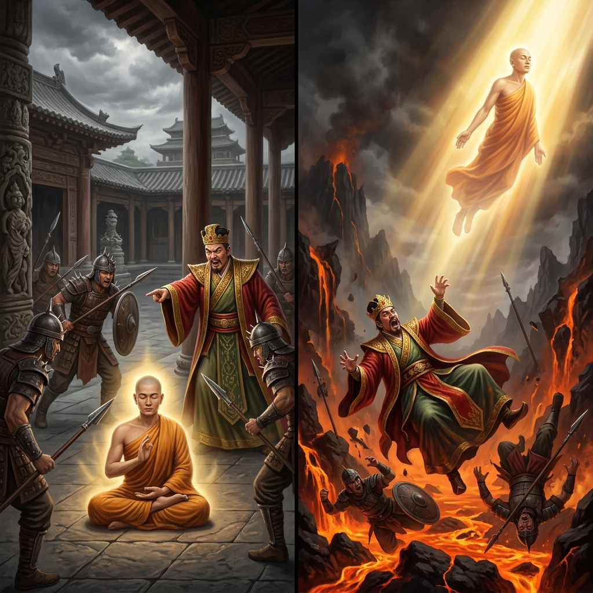
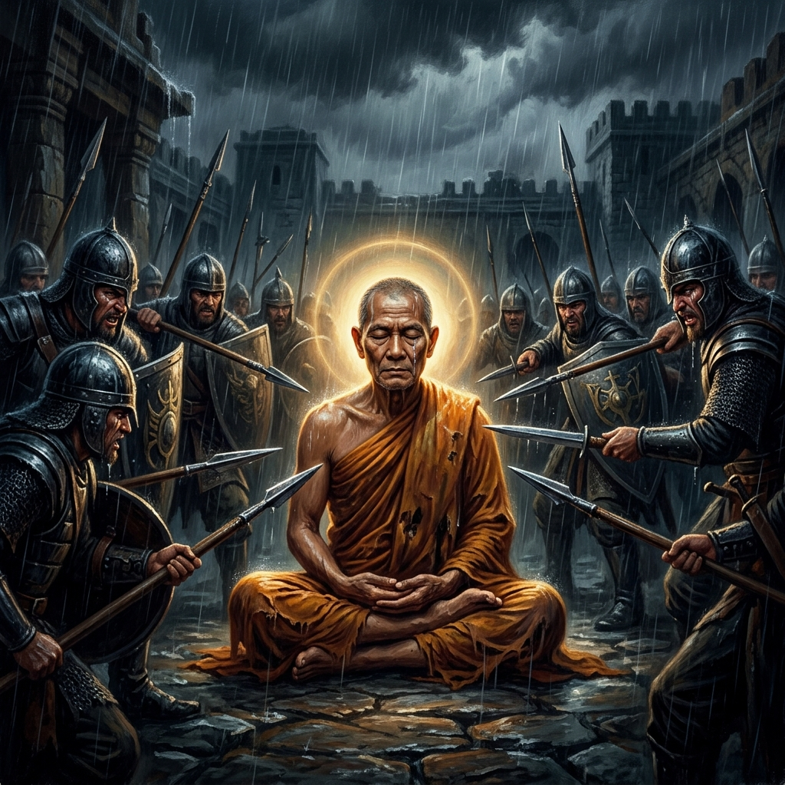
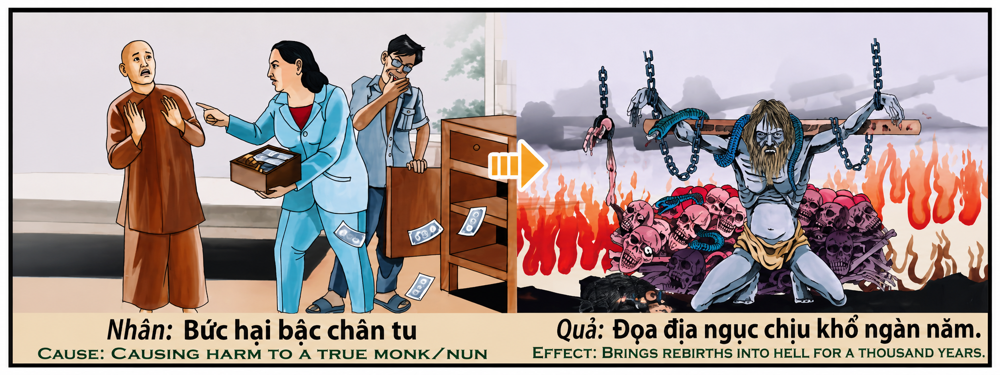

La Persecución del Sabio The Persecution of the Sage La persecuzione del saggio 迫害智者 اضطهاد الحكيم Преследование мудреца Die Verfolgung des Weisen La persécution du sage 賢者の迫害 A Perseguição do Sábio Bức hại bậc chân tu
Quien hiere al portador de la luz o ultraja al buscador de la verdad por soberbia o ignorancia, siembra espinas en su propio sendero y abre las puertas del abismo; pero aquel que permanece en paz ante la injusticia, eleva su alma hacia los cielos más altos. Whoever wounds the bearer of light or outrages the seeker of truth out of pride or ignorance sows thorns on their own path and opens the gates of the abyss; but they who remain in peace before injustice elevate their soul toward the highest heavens. Chi ferisce il portatore di luce o oltraggia il cercatore di verità per superbia o ignoranza, semina spine sul proprio cammino e apre le porte dell'afisso; ma colui che rimane in pace di fronte all'ingiustizia, eleva la sua anima verso i cieli più alti. 凡出于傲慢或愚昧而伤害光明传播者或侮辱真理寻求者的人，是在自己的道路上播撒荆棘，开启深渊之门；但在不公面前保持平静的人，会将自己的灵魂升华到至高天。 من يؤذي حامل النور أو يهين الباحث عن الحقيقة كبرياءً أو جهلاً، يزرع الأشواك في طريقه ويفتح أبواب الهاوية؛ أما من يظل في سلام أمام الظلم، فإنه يرفع روحه إلى أعالي السماوات. Тот, кто ранит носителя света или оскорбляет искателя истины по гордости или невежеству, сеет тернии на своем пути и открывает врата бездны; но тот, кто остается в мире перед лицом несправедливости, возносит свою душу к высшим небесам. Wer den Lichtträger verletzt oder den Wahrheitssucher aus Stolz oder Unwissenheit beleidigt, sät Dornen auf seinem eigenen Weg und öffnet die Tore des Abgrunds; wer aber angesichts des Unrechts im Frieden bleibt, erhebt seine Seele in den höchsten Himmel. Quiconque blesse le porteur de lumière ou outrage le chercheur de vérité par orgueil ou ignorance sème des épines sur son propre chemin et ouvre les portes de l'abîme ; mais celui qui demeure en paix face à l'injustice élève son âme vers les cieux les plus hauts. 傲慢や無知から光の運び手を傷つけ、あるいは真理の探求者を侮辱する者は、自らの道に棘を蒔き、深淵の扉を開くことになる。しかし、不義の前にあって平和を保つ者は、その魂を最も高い天へと高める。 Quem fere o portador da luz ou ultraja o buscador da verdade por soberba ou ignorância, semeia espinhos em seu próprio caminho e abre as portas do abismo; mas aquele que permanece em paz diante da injustiça, eleva sua alma em direção aos céus mais altos. Kẻ nào vì kiêu ngạo hay ngu muội mà làm tổn thương người mang ánh sáng hoặc xúc phạm người tìm kiếm chân lý là đang tự gieo gai góc trên đường đi của mình và mở ra cánh cửa vực thẳm; nhưng ai vẫn giữ được sự bình yên trước bất công sẽ nâng tâm hồn mình lên những tầng trời cao nhất.
El relieve original del templo nos presenta una escena de profunda y conmovedora advertencia espiritual: a la izquierda, bajo la mirada impasible del mundo terrenal, un rey arrogante rodeado de guardias armados ordena el maltrato de un monje que yace en actitud de pacífica meditación; a la derecha, la consecuencia kármica ineludible se despliega con violencia metafísica: los agresores caen hacia un abismo de fuego y lava, mientras el espíritu luminoso del monje asciende libre hacia esferas celestiales. La causa es la persecución del justo; el efecto es el descenso a los reinos de tormento y la liberación del inocente.
Esta ley kármica revela la gravedad absoluta de violentar la pureza. El practicante espiritual, al consagrar su vida a la verdad y la paz, se convierte en un canal directo de la luz divina en la tierra. Agredir a un ser de tal pureza no es un simple conflicto de voluntades, sino un acto de rebelión consciente contra la misma armonía cósmica. La gravedad del karma generado no se mide por la fuerza física del golpe, sino por la pureza del alma que es agredida y el veneno espiritual en el corazón del perseguidor.
La primera dimensión de esta enseñanza es el santuario de la inocencia y el sacrilegio de la violencia. El cuerpo y la mente del buscador espiritual son templos consagrados a la verdad. Cuando el perseguidor ataca al virtuoso, profana el espacio más sagrado del universo. Este acto rasga el tejido sutil del dharma y desata una reacción kármica desoladora. Al agredir a quien solo ofrece amor y perdón, el perseguidor desconecta su propia alma de la corriente de la vida, sumergiéndose instantáneamente en la corriente de la autodestrucción espiritual.
La segunda dimensión resalta la ceguera de la soberbia terrenal frente a la ley cósmica. El rey y sus soldados representan el poder mundano que cree estar por encima de la justicia eterna. Su violencia nace de la ignorancia, del miedo a una luz que no pueden controlar. Al intentar apagar la antorcha del sabio, creen proteger su propio pedestal, pero en realidad están cavando su propia fosa kármica. La soberbia del ego es el velo más espeso, el cual impide ver que cada golpe infligido al inocente es un golpe asestado a la propia existencia del agresor.
La tercera dimensión analiza el doble legado kármico: la caída del opresor y la ascensión de la víctima. Mientras el agresor es arrastrado hacia abajo por el peso insostenible de su odio, la víctima que soporta la persecución con paz y compasión experimenta una transformación de su propio despertar. El dolor físico infligido al sabio actúa como un fuego purificador que quema sus últimas deudas terrenales. Su perdón incondicional transmuta la agresión en luz pura, elevando su conciencia a planos celestiales. La espada del tirano, sin saberlo, abre las puertas de la gloria para el justo.
La cuarta dimensión profundiza en la naturaleza del fuego infernal como un reflejo directo del odio interior. El abismo y los mil años de sufrimiento no son un castigo impuesto por una deidad colérica. Son la manifestación energética de las frecuencias de rabia, malicia y soberbia que el perseguidor cultivó en su propio pecho. Un alma saturada de violencia es atraída por gravedad vibratoria hacia los planos de existencia más densos y dolorosos. El fuego que los quema en el infierno es el mismo fuego de odio que encendieron en la tierra.
The original relief of the temple presents us with a scene of profound and moving spiritual warning: on the left, under the cold gaze of the earthly world, an arrogant king surrounded by armed guards orders the abuse of a monk sitting in peaceful meditation; on the right, the inescapable karmic consequence unfolds with metaphysical violence: the aggressors fall into an abyss of fire and lava, while the luminous spirit of the monk ascends freely toward celestial spheres. The cause is the persecution of the righteous; the effect is the descent into realms of torment and the liberation of the innocent.
This karmic law reveals the absolute gravity of violating purity. The spiritual practitioner, by consecrating their life to truth and peace, becomes a direct channel of divine light on earth. To attack such a pure being is not a simple conflict of wills, but a conscious act of rebellion against cosmic harmony itself. The gravity of the generated karma is measured not by the physical force of the blow, but by the purity of the soul that is attacked and the spiritual poison in the heart of the persecutor.
The first dimension of this teaching is the sanctuary of innocence and the sacrilege of violence. The body and mind of the spiritual seeker are temples consecrated to the truth. When the persecutor attacks the virtuous, they profane the most sacred space in the universe. This act tears the subtle fabric of dharma and unleashes a devastating karmic reaction. By attacking someone who only offers love and forgiveness, the persecutor disconnects their own soul from the current of life, instantly plunging into the current of spiritual self-destruction.
The second dimension highlights the blindness of earthly pride in the face of cosmic law. The king and his soldiers represent the worldly power that believes itself to be above eternal justice. Their violence is born of ignorance, of the fear of a light they cannot control. By trying to extinguish the sage's torch, they believe they are protecting their own pedestal, but in reality they are digging their own karmic grave. The pride of the ego is the thickest veil, preventing them from seeing that every blow inflicted on the innocent is a blow struck against the aggressor's own existence.
The third dimension analyzes the double karmic legacy: the fall of the oppressor and the ascension of the victim. While the oppressor is dragged down by the unsustainable weight of their hatred, the victim who endures persecution with peace and compassion experiences a transformation of their own awakening. The physical pain inflicted on the sage acts as a purifying fire that burns away their final earthly debts. Their unconditional forgiveness transmutes aggression into pure light, elevating their consciousness to celestial planes. The tyrant's sword, without knowing it, opens the gates of glory for the righteous.
The fourth dimension delves into the nature of hellfire as a direct reflection of inner hatred. The abyss and the thousand years of suffering are not punishments imposed by an angry deity. They are the energetic manifestation of the frequencies of rage, malice, and pride that the persecutor cultivated in their own chest. A soul saturated with violence is drawn by vibratory gravity to the densest and most painful planes of existence. The fire that burns them in hell is the very same fire of hatred they lit on earth.
Il rilievo originale del tempio ci presenta una scena di profondo e commovente avvertimento spirituale: a sinistra, sotto lo sguardo impassibile del mondo terreno, un re arrogante circondato da guardie armate ordina il maltrattamento di un monaco che giace in atteggiamento di pacifica meditazione; a destra, la conseguenza karmica ineludibile si dispiega con violenza metafisica: gli aggressori cadono in un abisso di fuoco e lava, mentre lo spirito luminoso del monaco ascende libero verso le sfere celeste. La causa è la persecuzione del giusto; l'effetto è la discesa nei regni del tormento e la liberazione dell'innocente.
Questa legge karmica rivela la gravità assoluta di violare la purezza. Il praticante spirituale, consacrando la sua vita alla verità e alla pace, diventa un canale diretto della luce divina sulla terra. Aggredire un essere di tale purezza non è un semplice conflitto di volontà, ma un atto di ribellione consapevole contro l'armonia cosmica stessa. La gravità del karma generato non si misura dalla forza fisica del colpo, ma dalla purezza dell'anima che viene aggredita e dal veleno spirituale nel cuore del persecutore.
La prima dimensione di questo insegnamento è il santuario dell'innocenza e il sacrilegio della violenza. Il corpo e la mente del cercatore spirituale sono templi consacrati alla verità. Quando il persecutore attacca il virtuoso, profana lo spazio più sacro dell'universo. Questo atto lacera il tessuto sottile del dharma e scatena una reazione karmica devastante. Aggredendo colui che offre solo amore e perdono, il persecutore disconnette la propria anima dal flusso della vita, immergendosi istantaneamente nella corrente dell'autodestruzione spirituale.
La seconda dimensione evidenzia la cecità della superbia terrena di fronte alla legge cosmica. Il re e i suoi soldati rappresentano il potere mondano che crede di essere al di sopra della giustizia eterna. La loro violenza nasce dall'ignoranza, dal timore di una luce che non possono controllare. Nel tentativo di spegnere la torcia del saggio, credono di proteggere il proprio piedistallo, ma in realtà stanno scavando la propria fossa karmica. La superbia dell'ego es el velo più spesso, che impedisce di vedere che ogni colpo inflitto all'innocente è un colpo inferto alla propria esistenza.
La terza dimensione analizza il doppio legato karmico: la caduta dell'oppressore e l'ascensione della vittima. Mentre l'aggressore viene trascinato verso il basso dal peso insostenibile del suo odio, la vittima che sopporta la persecuzione con pace e compassione sperimenta una trasformazione del proprio risveglio. Il dolore fisico inflitto al saggio agisce come un fuoco purificatore che brucia i suoi ultimi debiti terreni. Il suo perdono incondizionato trasforma l'aggressione in luce pura, elevando la sua coscienza a piani celesti. La spada del tirano, senza saperlo, apre le porte della gloria per il giusto.
La quarta dimensione approfondisce la natura del fuoco infernale come riflesso diretto dell'odio interiore. L'abisso e i mille anni di sofferenza non sono una punizione imposta da una divinità collerica. Sono la manifestazione energetica delle frequenze di rabbia, malicia e superbia che il persecutore ha coltivato nel proprio petto. Un'anima satura di violenza viene attratta per gravità vibratoria verso i piani di esistenza più densi e dolorosi. Il fuoco che li brucia nell'inferno è lo stesso fuoco d'odio che hanno acceso sulla terra.
寺庙的原始浮雕为我们呈现了一幅深刻而令人警醒的精神景象：左边，在尘世冷漠的注视下，一位傲慢的国王在武装卫兵的环绕下，下令虐待一位正处于平静禅定中的僧侣；右边，无可避免的业报以形而上学的暴力展开：施暴者坠入烈火与熔岩的深渊，而僧侣光明的灵魂则自由地升入天界。因是迫害义人；果是堕入痛苦之境与无辜者的解脱。
这一业力法则揭示了侵犯纯洁的绝对严重性。修行者将生命奉献给真理与和平，成为神圣光明在人间的直接通道。伤害如此纯洁的生命不仅是意志的冲突，更是对宇宙和谐本身的蓄意反叛。所造恶业严重度并不取决于打击的物理力量，而取决于受害灵魂的纯洁度以及迫害者心胸中的精神毒素。
这一教义的第一维度是无辜者的圣所与暴力的亵渎。修行者的身心是奉献给真理的殿堂。当迫害者攻击德行高尚之人时，他们便亵渎了宇宙中最神圣的空间。这一行径撕裂了佛法的细微织物，引发了毁灭性的业力反应。攻击只给予爱与宽恕之人，迫害者便将自己的灵魂从生命之流中切断，瞬间沉入精神自我毁灭的洪流中。
第二维度强调了尘世傲慢在宇宙法则面前的盲目性。国王及其士兵代表了自认为高于永恒正义的世俗权力。他们的暴力源于无知，源于对无法控制的光明的恐惧。在企图熄灭智者火炬的过程中，他们以为是在保护自己的宝座，但实际上是在为自己挖掘业力之墓。自我的傲慢是最厚的面纱，让人看不见对无辜者的每一次打击都是对施暴者自身存在的重击。
第三维度分析了双重业力遗留：压迫者的坠落与受害者的升华。当施暴者被其无法承受的仇恨重担拉下深渊时，以和平与慈悲忍受迫害的受害者则经历了自身觉醒的深化。施加给智者的肉体痛苦起到了净化之火的作用，烧尽了他们最后的尘世债务。他们无条件的宽恕将攻击转化为纯净的光明，将意识提升到天界。暴君的宝剑在不知不觉中为义人打开了荣耀之门。
第四维度深入探讨了地狱之火作为内心仇恨直接反映的本质。深渊和千年的痛苦并不是愤怒神明强加的惩罚。它们是迫害者在自己胸中培养的愤怒、恶意和傲慢频率的能量显现。一个饱和了暴力的灵魂会因震动引力被吸引到最稠密和最痛苦的存在层面。地狱中烧灼他们的火焰，正是他们在人间点燃的仇恨之火。
يقدم لنا النقش الأصلي للمعبد مشهدًا لتحذير روحي عميق ومؤثر: على اليسار، وتحت النظرة اللامبالية للعالم الأرضي، يأمر ملك مستبد محاط بحراس مسلحين بإساءة معاملة راهب يجلس في تأمل سلمي؛ وعلى اليمين، تتجلى النتيجة الكرمية الحتمية بعنف ميتافيزيقي: يسقط المعتدون في هاوية من النار والحمم البركانية، بينما تصعد روح الراهب المضيئة بحرية نحو السماوات. السبب هو اضطهاد الصالح؛ والنتيجة هي الهبوط إلى عوالم العذاب وتحرر البريء.
يكشف هذا القانون الكرمي عن الجاذبية المطلقة لانتهاك النقاء. الراهب، بتكريس حياته للحقيقة والسلام، يصبح قناة مباشرة للنور الإلهي على الأرض. إن الاعتداء على كائن بهذا النقاء ليس مجرد صراع إرادات، بل هو عمل تمرد واعٍ ضد الانسجام الكوني نفسه. لا تُقاس شدة الكارما المتولدة بالقوة البدنية للضربة، بل بنقاء الروح التي تم الاعتداء عليها وبالسم الروحي في قلب المضطهِد.
البعد الأول لهذا التعليم هو ملاذ البراءة وتدنيس العنف. إن جسد وعقل الساعي الروحي هما معبدان مكرسان للحقيقة. عندما يهاجم المضطهِِد الصالح، فإنه يدنس أقدس مكان في الكون. يمزق هذا العمل النسيج اللطيف للدارما ويثير رد فعل كرمي مدمر. بالاعتداء على من لا يقدم سوى الحب والمغفرة، يقطع المضطهِِد روحه عن مجرى الحياة، ويغرق على الفور في تيار التدمير الروحي الذاتي.
البعد الثاني يسلط الضوء على عمى الكبرياء الدنيوي أمام القانون الكوني. يمثل الملك وجنوده القوة الدنيوية التي تظن نفسها فوق العدالة الأبدية. ينبعث عنفهم من الجهل، ومن الخوف من نور لا يمكنهم السيطرة عليه. بمحاولتهم إطفاء شعلة الحكيم، يظنون أنهم يحمون عرشهم، لكنهم في الواقع يحفرون قبرهم الكرمي. كبرياء الأنا هو الحجاب الأكثر سمكًا، الذي يمنع رؤية أن كل ضربة توجه للبريء هي ضربة موجهة لوجود المعتدي نفسه.
البعد الثالث يحلل الميراث الكرمي المزدوج: سقوط الظالم وصعود المظلوم. بينما ينجذب المعتدي إلى الأسفل بفعل ثقل كراهيته التي لا تطاق، فإن المظلوم الذي يتحمل الاضطهاد بسلام وتسامح يختبر تحولاً في صحوته الخاصة. الألم الجسدي الموجه للحكيم يعمل كنار مطهرة تحرق ديونه الأرضية الأخيرة. مغفرته غير المشروطة تحول الاعتداء إلى نور خالص، وترفع وعيه إلى مستويات سماوية. إن سيف الطاغية، دون أن يدري، يفتح أبواب المجد للصالح.
البعد الرابع يتعمق في طبيعة نار الجحيم كانعكاس مباشر للكراهية الداخلية. الهاوية وألف عام من المعاناة ليست عقاباً تفرضه إله غاضب. إنها التجلي الطاقي لترددات الغضب والخبث والكبرياء التي زرعها المضطهِِد في صدره. الروح المشبعة بالعنف تنجذب بفعل الجاذبية الاهتزازية إلى أكثر عوالم الوجود كثافة وألماً. النار التي تحرقهم في الجحيم هي نفس نار الكراهية التي أشعلوها على الأرض.
Оригинальный рельеф храма представляет нам сцену глубокого и волнующего духовного предупреждения: слева, под бесстрастным взглядом земного мира, высокомерный царь в окружении вооруженной стражи приказывает истязать монаха, пребывающего в мирной медитации; справа неизбежное кармическое последствие разворачивается с метафизической силой: мучители падают в бездну огня и лавы, в то время как сияющий дух монаха свободно возносится к небесным сферам. Причина — преследование праведника; следствие — низвержение в царство мук и освобождение невинного.
Этот кармический закон раскрывает абсолютную тяжесть осквернения чистоты. Духовный практик, посвящая свою жизнь истине и миру, становится прямым каналом божественного света на земле. Нападение на столь чистое существо — это не просто конфликт воли, но акт сознательного бунта против самой космической гармонии. Тяжесть порожденной кармы измеряется не физической силой удара, а чистотой души, подвергшейся нападению, и духовным ядом в сердце преследователя.
Первое измерение этого учения — святилище невинности и святотатство насилия. Тело и разум духовного искателя — это храмы, посвященные истине. Когда преследователь нападает на добродетельного, он оскверняет самое священное пространство во вселенной. Этот акт разрывает тонкую ткань дхармы и вызывает разрушительную кармическую реакцию. Нападая на того, кто предлагает лишь любовь и прощение, преследователь отсекает собственную душу от потока жизни, мгновенно погружаясь в пучину духовного саморазрушения.
Второе измерение подчеркивает слепоту земной гордыни перед космическим законом. Царь и его солдаты олицетворяют мирскую власть, которая считает себя выше вечной справедливости. Их насилие рождается из невежества, из страха перед светом, который они не могут контролировать. Пытаясь погасить факел мудреца, они думают, что защищают свой собственный пьедестал, но на самом деле роют себе кармическую могилу. Гордыня эго — это самая плотная пелена, мешающая увидеть, что каждый удар, нанесенный невинному, является ударом по собственному существованию преследователя.
Третье измерение анализирует двойное кармическое наследие: падение угнетателя и вознесение жертвы. В то время как мучитель увлекается вниз невыносимой тяжестью своей ненависти, жертва, переносящая преследования с миром и состраданием, переживает трансформацию собственного пробуждения. Физическая боль, причиненная мудрецу, действует как очищающий огонь, сжигающий его последние земные долги. Его безусловное прощение превращает агрессию в чистый свет, вознося его сознание в небесные сферы. Меч тирана, сам того не зная, открывает праведнику врата славы.
Четвертое измерение углубляется в природу адского огня как прямого отражения внутренней ненависти. Бездна и тысяча лет страданий — это не наказание, наложенное разгневанным божеством. Они являются энергетическим проявлением вибраций гнева, злобы и гордыни, которые преследователь взрастил в собственной груди. Душа, перенасыщенная насилием, притягивается вибрационной гравитацией к самым плотным и болезненным планам бытия. Огонь, сжигающий их в аду, — это тот самый огонь ненависти, который они зажгли на земле.
Das ursprüngliche Relief des Tempels präsentiert uns eine Szene von tiefer und bewegender spiritueller Warnung: Links ordnet ein arroganter König im Beisein bewaffneter Wachen unter dem gleichgültigen Blick der irdischen Welt die Misshandlung eines in friedlicher Meditation verharrenden Mönchs an; rechts entfaltet sich die unausweichliche karmische Folge mit metaphysischer Gewalt: Die Angreifer stürzen in einen Abgrund aus Feuer und Lava, während der leuchtende Geist des Mönchs frei in himmlische Sphären aufsteigt. Die Ursache ist die Verfolgung des Gerechten; die Wirkung ist der Abstieg in die Reiche der Qual und die Befreiung des Unschuldigen.
Dieses karmische Gesetz offenbart die absolute Schwere der Verletzung der Reinheit. Der spirituelle Praktizierende wird durch die Weihe seines Lebens an Wahrheit und Frieden zu einem direkten Kanal des göttlichen Lichts auf Erden. Ein so reines Wesen anzugreifen ist kein bloßer Konflikt der Willenskraft, sondern ein Akt bewusster Rebellion gegen die kosmische Harmonie selbst. Die Schwere des erzeugten Karmas bemisst sich nicht nach der physischen Kraft des Schlages, sondern nach der Reinheit der angegriffenen Seele und dem spirituellen Gift im Herzen des Verfolgers.
Die erste Dimension dieser Lehre ist das Heiligtum der Unschuld und das Sakrileg der Gewalt. Körper und Geist des spirituellen Suchers sind der Wahrheit geweihte Tempel. Wenn der Verfolger den Tugendhaften angreift, entweiht er den heiligsten Raum des Universums. Dieser Akt zerreißt das feine Gewebe des Dharma und löst eine verheerende karmische Reaktion aus. Indem er denjenigen angreift, der nur Liebe und Vergebung anbietet, trennt der Verfolger seine eigene Seele vom Strom des Lebens und stürzt sich augenblicklich in die Strömung spiritueller Selbstzerstörung.
Die zweite Dimension verdeutlicht die Blindheit des irdischen Stolzes gegenüber dem kosmischen Gesetz. Der König und seine Soldaten repräsentieren die weltliche Macht, die sich über die ewige Gerechtigkeit erhaben glaubt. Ihre Gewalt entspringt der Unwissenheit, der Angst vor einem Licht, das sie nicht kontrollieren können. Indem sie versuchen, die Fackel des Weisen auszulöschen, glauben sie, ihr eigenes Podest zu schützen, schaufeln aber in Wirklichkeit ihr eigenes karmisches Grab. Der Stolz des Egos ist der dichteste Schleier, der verhindert zu sehen, dass jeder dem Unschuldigen zugefügte Schlag ein Schlag gegen die eigene Existenz des Angreifers ist.
Die dritte Dimension analysiert das doppelte karmische Erbe: den Fall des Unterdrückers und den Aufstieg des Opfers. Während der Angreifer unter der unerträglichen Last seines Hasses nach unten gezogen wird, erfährt das Opfer, das die Verfolgung mit Frieden und Mitgefühl erträgt, eine Verwandlung seines eigenen Erwachens. Der dem Weisen zugefügte körperliche Schmerz wirkt wie ein reinigendes Feuer, das seine letzten irdischen Schulden verbrennt. Bedinungslose Vergebung wandelt die Aggression in reines Licht um und erhebt sein Bewusstsein auf himmlische Ebenen. Das Schwert des Tyrannen öffnet dem Gerechten, ohne es zu wissen, die Tore der Herrlichkeit.
Die verierte Dimension vertieft die Natur des Höllenfeuers als direktes Spiegelbild des inneren Hasses. Der Abgrund und die tausend Jahre des Leidens sind keine Strafe, die von einer zornigen Gottheit auferlegt wird. Sie sind die energetische Manifestation der Frequenzen von Wut, Bosheit und Stolz, die der Verfolger in seiner eigenen Brust kultiviert hat. Eine von Gewalt gesättigte Seele wird durch Schwingungsschwerkraft in die dichtesten und schmerzhaftesten Existenzebenen gezogen. Das Feuer, das sie in der Hölle verbrennt, ist dasselbe Feuer des Hasses, das sie auf Erden entzündet haben.
Le relief original du temple nous présente une scène de profond et émouvant avertissement spirituel : à gauche, sous le regard impassible du monde terrestre, un roi arrogant entouré de gardes armés ordonne la maltraitance d'un moine assis en méditation paisible ; à droite, la conséquence karmique inéluctable se déploie avec une violence métaphysique : les agresseurs tombent dans un abîme de feu et de lave, tandis que l'esprit lumineux du moine s'élève librement vers les sphères célestes. La cause est la persécution du juste ; l'effet est la descente dans les royaumes du tourment et la libération de l'innocent.
Cette loi karmique révèle la gravité absolue de violenter la pureté. Le pratiquant spirituel, en consacrant sa vie à la vérité et à la paix, devient un canal direct de la lumière divine sur la terre. Agresser un être d'une telle pureté n'est pas un simple conflit de volontés, mais un acte de rébellion consciente contre l'harmonie cosmique elle-même. La gravité du karma généré ne se mesure pas à la force physique du coup, mais à la pureté de l'âme agressée et au venin spirituel dans le cœur du persécuteur.
La première dimension de cet enseignement est le sanctuaire de l'innocence et le sacrilège de la violence. Le corps et l'esprit du chercheur spirituel sont des temples consacrés à la vérité. Quand le persécuteur attaque le vertueux, il profane l'espace le plus sacré de l'univers. Cet acte déchire le tissu subtil du dharma et déclenche une réaction karmique dévastatrice. En agressant celui qui n'offre qu'amour et pardon, le persécuteur déconnecte sa propre âme du flux de la vie, se plongeant instantanément dans le courant de l'autodestruction spirituelle.
La deuxième dimension souligne l'aveuglement de l'orgueil terrestre face à la loi cosmologique. Le roi et ses soldats représentent le pouvoir temporel qui se croit au-dessus de la justice éternelle. Leur violence naît de l'ignorance, de la peur d'une lumière qu'ils ne peuvent contrôler. En tentant d'éteindre le flambeau du sage, ils croient protéger leur propre piédestal, mais en réalité ils creusent leur propre tombe karmique. L'orgueil de l'ego est le voile le plus épais, empêchant de voir que chaque coup infligé à l'innocent est un coup porté à la propre existence de l'agresseur.
La troisième dimension analyse le double héritage karmique : la chute de l'oppresseur et l'ascension de la victime. Tandis que l'agresseur est entraîné vers le bas par le poids insoutenable de sa haine, la victime qui endure la persécution avec paix et compassion fait l'expérience d'une transformation de son propre éveil. La douleur physique infligée au sage agit comme un feu purificateur qui brûle ses dernières dettes terrestres. Son pardon inconditionnel transmute l'agression en lumière pure, élevant sa conscience vers des plans célestes. L'épée du tyran, sans le savoir, ouvre les portes de la gloire pour le juste.
La quatrième dimension approfondit la nature du feu de l'enfer comme un reflet direct de la haine intérieure. L'abîme et les mille ans de souffrance ne sont pas un châtiment imposé par une divinité en colère. Ils sont la manifestation énergétique des fréquences de rage, de malice et d'orgueil que le persécuteur a cultivées dans sa propre poitrine. Une âme saturée de violence est attirée par gravité vibratoire vers les plans d'existence les plus denses et les plus douloureux. Le feu qui les brûle en enfer est le même feu de haine qu'ils ont allumé sur terre.
寺院のオリジナルのレリーフは、深く揺さぶられるような精神的な警告の場面を私たちに見せてくれます。左側では、世俗の冷ややかな視線のもと、武装した兵士に囲まれた傲慢な王が、穏やかに瞑想している僧侶の虐待を命じています。右側では、避けられないカルマの報いが形而上学的な暴力をもって展開しています。襲撃者たちは炎と溶岩の深淵へと落下し、僧侶の輝かしい魂は天の領域へと自由に昇っていきます。原因は義人の迫害であり、結果は苦悩の領域への転落と無辜の者の解放です。
このカルマの法則は、純粋さを侵害することの絶対的な重大性を明らかにしています。精神的な修行者は、自らの人生を真理と平和に捧げることで、地上における神聖な光の直接的なチャネルとなります。このような純粋な存在を攻撃することは、単なる意志の衝突ではなく、宇宙の調和そのものに対する自覚的な反逆行為です。生じるカルマの重さは、打撃の物理的な力ではなく、傷つけられた魂の純粋さと、迫害者の心にある精神的な毒によって測られます。
この教えの第一の次元は、無垢の聖域と暴力による冒涜です。修行者の身体と心は、真理に捧げられた神殿です。迫害者が徳の高い者を攻撃するとき、宇宙で最も神聖な空間を冒涜することになります。この行為はダーマの繊細な織物を引き裂き、壊滅的なカルマの反応を引き起こします。愛と許しだけを与える者を攻撃することで、迫害者は自らの魂を生命の流れから切り離し、精神的な自己破滅の激流へと瞬時に身を投じることになります。
第二の次元は、宇宙の法則に対する地上の傲慢さの盲目を浮き彫りにしています。王と兵士たちは、永遠の正義よりも自分たちが上にあると信じる世俗の権力を表しています。彼らの暴力は無知から、端的に彼らが制御できない光への恐れから生じています。賢者のたいまつを消そうとすることで、彼らは自分の地位を守っているつもりですが、実際には自分自身のカルマの墓穴を掘っているのです。エゴの傲慢さは最も厚いベールであり、無辜の者への一打が、襲撃者自身の存在に対する重い一撃であることを見えなくさせます。
第三の次元は、二重のカルマの遺産、すなわち圧迫者の転落と被害者の上昇を分析しています。襲撃者が自らの憎悪の耐え難い重みによって深淵へと引きずり下ろされる一方で、平和と慈悲をもって迫害に耐える被害者は、自らの目覚めの深化を経験します。賢者に与えられる肉体的な苦痛は、地上の最後の負債を焼き払う浄化の火として機能します。無条件の許しは攻撃を純粋な光へと変容させ、その意識を天の領域へと高めます。暴君の剣は、知らず知らずのうちに義人に栄光の扉を開くのです。
第四の次元は、内なる憎悪の直接的な反映としての地獄の火の性質を深く掘り下げています。深淵と千年の苦しみは、怒れる神によって課される罰ではありません。それらは、迫害者が自らの胸の中で育てた怒り、悪意、傲慢さの周波数のエネルギー的な顕現です。暴力に満ちた魂は、振動の重力によって、最も密度が高く苦痛に満ちた存在の次元へと引き寄せられます。地獄で彼らを焼き尽くす火は、彼らが地上で燃え立たせた憎悪の火そのものなのです。
O relevo original do templo apresenta-nos uma cena de profundo e comovente aviso espiritual: à esquerda, sob o olhar impassível do mundo terreno, um rei arrogante rodeado de guardas armados ordena o maltrato de um monge que jaz em atitude de pacífica meditação; à direita, a consequência cármica inevitável desdobra-se com violência metafísica: os agressores caem num abismo de fogo e lava, enquanto o espírito luminoso del monge ascende livre para as esferas celestes. A causa é a perseguição do justo; o efeito é a descida aos reinos de tormento e a libertação do inocente.
Esta lei cármica revela a gravidade absoluta de violar a pureza. O praticante espiritual, ao consagrar a sua vida à verdade e à paz, torna-se um canal direto da luz divina na terra. Agredir um ser de tal pureza não é um simples conflito de vontades, mas um ato de rebelião consciente contra a própria harmonia cósmica. A gravidade do carma gerado não se mede pela força física do golpe, mas pela pureza da alma que é agredida e pelo veneno espiritual no coração do perseguidor.
A primeira dimensão deste ensinamento é o santuário da inocência e o sacrilegio da violência. O corpo e a mente do buscador espiritual são templos consagrados à verdade. Quando o perseguidor ataca o virtuoso, profana o espaço mais sagrado do universo. Este ato rasga o tecido sutil do dharma e desata uma reação cármica devastadora. Ao agredir quem apenas oferece amor e perdão, o perseguidor desconecta a sua própria alma da corrente da vida, mergulhando instantaneamente na corrente da autodestruição espiritual.
A segunda dimensão realça a cegueira da soberba terrena diante da lei cósmica. O rei e os seus soldados representam o poder mundano que se crê acima da justiça eterna. A sua violência nasce da ignorância, do medo de uma luz que não podem controlar. Ao tentar apagar a tocha do sábio, acreditam proteger o seu próprio pedestal, mas na verdade estão cavando a sua própria sepultura cármica. A soberba do ego é o véu mais espesso, que impede de ver que cada golpe infligido ao inocente é um golpe desferido contra a própria existência do agressor.
A terceira dimensão analisa o duplo legado cármico: a queda do opressor e a ascensão da vítima. Enquanto o agressor é arrastrado para baixo pelo peso insustentável do seu ódio, a vítima que suporta a perseguição com paz e compasión experimenta uma transformação do seu próprio despertar. A dor física infligida ao sábio atua como um fogo purificador que queima as suas últimas dívidas terrenas. O seu perdão incondicional transmuta a agressão em luz pura, elevando a sua consciência a planos celestes. A espada do tirano, sem o saber, abre as portas da glória para o justo.
A quarta dimensão aprofunda a natureza do fogo do inferno como um reflexo direto do ódio interior. O abismo e os mil anos de sofrimento não são um castigo imposto por uma divindade colérica. São a manifestação energética das frequências de raiva, malícia e soberba que o perseguidor cultivou no seu próprio peito. Uma alma saturada de violência é atraída por gravidade vibratória para os planos de existência mais densos e dolorosos. O fogo que os queima no inferno é o mesmo fogo de ódio que acenderam na terra.
Bức phù điêu nguyên bản của ngôi chùa cho chúng ta thấy một khung cảnh cảnh báo tâm linh sâu sắc và xúc động: bên trái, dưới cái nhìn thờ ơ của thế gian, một vị vua kiêu ngạo cùng các binh lính vũ trang ra lệnh hành hạ một nhà sư đang ngồi thiền định hòa bình; bên phải, quả báo tất yếu hiển hiện bằng bạo lực siêu hình: những kẻ ác rơi xuống vực thẳm lửa và dung nham, trong khi linh hồn rạng rỡ của vị sư bay lên cõi trời tự do. Nhân là bức hại người lành; quả là sa vào cõi khổ đau và sự giải thoát của người vô tội.
Luật nhân quả này tiết lộ mức độ nghiêm trọng tuyệt đối của việc xúc phạm sự thuần khiết. Người tu hành, bằng cách dâng hiến cuộc đời mình cho chân lý và hòa bình, trở thành một kênh dẫn trực tiếp của ánh sáng thiêng liêng trên trái đất. Tấn công một sinh mệnh thuần khiết như vậy không đơn thuần là cuộc xung đột ý chí, mà là hành vi nổi loạn có ý thức chống lại chính sự hài hòa của vũ trụ. Độ nặng của nghiệp tạo ra không được đo bằng lực vật lý của đòn đánh, mà bằng sự thanh tịnh của linh hồn bị tổn hại và độc tố tinh thần trong lòng kẻ bức hại.
Khía cạnh thứ nhất của lời dạy này là sự tôn nghiêm của người vô tội và sự xúc phạm đối với bạo lực. Thân và tâm của người tìm kiếm tâm linh là những đền thờ dâng hiến cho chân lý. Khi kẻ bức hại tấn công người đức hạnh, họ đã xúc phạm không gian thiêng liêng nhất của vũ trụ. Hành vi này xé toạc tấm lưới tinh tế của Phật pháp và gây ra phản ứng nghiệp báo tàn khốc. Bằng việc tấn công người chỉ biết trao đi tình yêu và sự tha thứ, kẻ bức hại tự cắt đứt linh hồn mình khỏi dòng chảy của sự sống, ngay lập tức chìm vào dòng chảy tự hủy hoại tâm linh.
Khía cạnh thứ hai làm nổi bật sự mù quáng của lòng kiêu ngạo trần gian trước thiên luật. Vị vua và quân lính đại diện cho quyền lực thế tục tự cho mình đứng trên công lý vĩnh hằng. Bạo lực của họ sinh ra từ vô minh, từ nỗi sợ hãi trước một luồng sáng mà họ không thể kiểm soát. Khi cố gắng dập tắt ngọn đuốc của bậc hiền triết, họ nghĩ rằng đang bảo vệ ngai vàng của mình, nhưng thực chất đang tự đào hố chôn nghiệp báo cho chính mình. Sự kiêu ngạo của bản ngã là bức màn dày nhất, ngăn cản việc nhìn thấy rằng mỗi đòn roi giáng vào người vô tội chính là đòn roi đánh vào chính sự sống của kẻ thủ ác.
Khía cạnh thứ ba phân tích di sản nghiệp kép: sự sa ngã của kẻ áp bức và sự giải thoát của nạn nhân. Trong khi kẻ bạo hành bị kéo xuống bởi sức nặng không thể chống đỡ của lòng thù hận, thì nạn nhân chịu đựng bức hại với tâm hòa bình và từ bi lại trải nghiệm sự chuyển hóa sâu sắc trong tiến trình thức tỉnh của mình. Nỗi đau thể xác giáng lên bậc hiền triết hoạt động như ngọn lửa thanh tẩy thiêu rụi những món nợ trần gian cuối cùng. Sự tha thứ vô điều kiện của ngài chuyển hóa bạo lực thành ánh sáng thuần khiết, nâng cao tâm thức lên cõi trời. Thanh kiếm của kẻ bạo chúa, một cách vô thức, đã mở ra cánh cửa vinh quang cho người chính trực.
Khía cạnh thứ tư đi sâu vào bản chất của lửa địa ngục như sự phản ánh trực tiếp của lòng căm thù bên trong. Vực thẳm và ngàn năm đau khổ không phải là hình phạt áp đặt bởi một vị thần giận dữ. Chúng là sự biểu hiện năng lượng từ những tần số giận dữ, độc ác và kiêu ngạo mà kẻ bức hại tự nuôi dưỡng trong ngực mình. Một linh hồn bão hòa bạo lực sẽ bị hút bởi trọng lực rung động xuống các cõi tồn tại đặc quánh và đau đớn nhất. Ngọn lửa thiêu đốt họ ở địa ngục chính là ngọn lửa thù hận mà họ đã nhen nhóm trên trần gian.

La Ofrenda Robada
The Stolen Offering
L'Offerta Rubata
被盗的供品
القرابين المسروقة
Украденное подношение
Das Gestohlene Opfer
L'Offrande Volée
盗まれた供物
A Oferenda Roubada
Lễ Vật Bị Đánh Cắp
En una modesta provincia, donde la niebla de la mañana acariciaba los tejados de arcilla, se alzaba un sencillo templo budista. Allí vivía el Maestro Minh, un monje de túnica marrón cuya mirada albergaba la mansedumbre de los lagos tranquilos. Minh cuidaba de los huérfanos y los enfermos, y las pocas limosnas que los devotos depositaban en un viejo armario de madera eran transmutadas de inmediato en arroz y medicinas. Minh no poseía nada; su única riqueza era una vasija de arcilla para pedir limosna y un corazón libre de deseos. Los aldeanos lo amaban porque en su presencia las penas parecían disolverse como sal en el agua.
Sin embargo, la codicia acechaba en las sombras. Lan, una influyente administradora que vestía elegantes trajes celestes, y su cómplice Sơn, un joven contable de anteojos y sonrisa cínica, contemplaban con envidia las donaciones del templo. Una noche, aprovechando el silencio del santuario, Sơn abrió el armario de madera y comenzó a meter fajos de billetes en una caja de madera, riéndose en voz baja al ver cómo el dinero caía de sus manos y de los cajones. El plan de ambos no era solo robar la ofrenda, sino destruir la reputación del monje para quedarse con el control del templo.
A la mañana siguiente, ante una multitud de aldeanos convocados por Lan, la mujer señaló con ira y desprecio al Maestro Minh, sosteniendo en sus manos la caja con el dinero restante. «¡Este monje que creían santo ha estado robándonos!», gritó con voz estridente. A su espalda, Sơn simulaba indignación, tapándose la boca para ocultar una risa burlona mientras guardaba el resto del botín. El Maestro Minh, al verse rodeado de dedos acusadores y miradas de decepción, sintió una profunda tristeza en su pecho. Miró a sus calumniadores no con enojo, sino con una compasión tan dolorosa que dos lágrimas rodaron por sus mejillas. Juntó las manos sobre su pecho y dijo con suavidad: «Hijos míos, si necesitaban el dinero, solo debían pedirlo. Pero no construyan una celda de mentiras para sus propias almas».
Cegados por la calumnia, los aldeanos expulsaron a golpes y pedradas al monje del templo. El Maestro Minh caminó bajo la lluvia torrencial, con los pies descalzos sangrando en las rocas, orando en silencio por el perdón de quienes lo ultrajaban. Mientras tanto, Lan y Sơn celebraban su victoria en el templo vacío, repartiéndose el oro robado. Pero la justicia kármica no duerme. Pocos meses después, una extraña aflicción consumió a Lan, quien murió repitiendo el nombre del monje en medio de delirios de ahogo. Sơn, por su parte, comenzó a perder la vista y a ser acosado por visiones aterradoras: cada vez que cerraba los ojos, sentía que su cuerpo era encadenado a una viga de madera ardiente en un abismo de fuego, rodeado de calaveras que susurraban sus mentiras y serpientes azules que se enroscaban en su garganta para asfixiarlo.
Convertido en un despojo ciego y mendigo, consumido por las llagas de su propia culpa, Sơn vagó durante años buscando al monje que había traicionado. Finalmente, lo encontró en una choza lejana, envejecido pero rodeado de una luz dorada de paz inquebrantable. Sơn cayó de rodillas, sollozando, con el rostro en el polvo, implorando: «He vivido en el infierno que yo mismo encendí. Por favor, maestro, deja que mi cuerpo arda en el fuego, pero perdóname». El Maestro Minh, con infinita ternura, levantó al hombre que lo había destruido, limpió sus lágrimas con su túnica marrón y colocó su mano sobre la frente de Sơn. Al instante, las serpientes invisibles que asfixiaban a Sơn se disolvieron y el fuego de su tormento se transformó en una brisa fresca de paz. Minh le sonrió y susurró: «El perdón siempre estuvo en ti, hermano mío. El infierno termina donde empieza tu arrepentimiento».
In a modest province, where the morning mist caressed the clay rooftops, stood a simple Buddhist temple. There lived Master Minh, a monk in a brown robe whose gaze held the gentleness of still lakes. Minh cared for orphans and the sick, and the few alms that devotees deposited in an old wooden cabinet were immediately transmuted into rice and medicine. Minh owned nothing; his only wealth was a clay alms bowl and a heart free of desires. The villagers loved him because in his presence, sorrows seemed to dissolve like salt in water.
However, greed lurked in the shadows. Lan, an influential administrator who wore elegant light blue suits, and her accomplice Sơn, a young accountant with glasses and a cynical smile, looked upon the temple's donations with envy. One night, taking advantage of the sanctuary's silence, Sơn opened the wooden cabinet and began stuffing bundles of banknotes into a wooden box, laughing quietly as the money fell from his hands and the drawers. Their plan was not only to steal the offering, but to destroy the monk's reputation to gain control of the temple.
The next morning, before a crowd of villagers summoned by Lan, the woman pointed with anger and contempt at Master Minh, holding the box with the remaining money in her hands. "This monk you thought was holy has been stealing from us!" she shouted in a shrill voice. Behind her, Sơn feigned outrage, covering his mouth to hide a mocking laugh while pocketing the rest of the loot. Master Minh, finding himself surrounded by accusing fingers and looks of disappointment, felt a deep sadness in his chest. He looked at his slanderers not with anger, but with a compassion so painful that two tears rolled down his cheeks. He folded his hands over his chest and said softly: "My children, if you needed the money, you only had to ask. But do not build a cell of lies for your own souls."
Blinded by the slander, the villagers beat and stoned the monk, expelling him from the temple. Master Minh walked under the torrential rain, his bare feet bleeding on the rocks, praying in silence for the forgiveness of those who outraged him. Meanwhile, Lan and Sơn celebrated their victory in the empty temple, dividing the stolen gold. But karmic justice does not sleep. A few months later, a strange affliction consumed Lan, who died repeating the monk's name amidst delusions of drowning. Sơn, for his part, began to lose his sight and was haunted by terrifying visions: every time he closed his eyes, he felt his body chained to a burning wooden beam in an abyss of fire, surrounded by skulls whispering his lies and blue snakes wrapping around his throat to suffocate him.
Reduced to a blind beggar, consumed by the sores of his own guilt, Sơn wandered for years seeking the monk he had betrayed. Finally, he found him in a distant hut, aged but surrounded by a golden light of unshakable peace. Sơn fell to his knees, sobbing, his face in the dust, imploring: "I have lived in the hell I lit myself. Please, master, let my body burn, but forgive me." Master Minh, with infinite tenderness, lifted the man who had destroyed him, wiped his tears with his brown robe, and placed his hand on Sơn's forehead. Instantly, the invisible snakes suffocating Sơn dissolved, and the fire of his torment transformed into a cool breeze of peace. Minh smiled at him and whispered: "Forgiveness was always within you, my brother. Hell ends where your repentance begins."
In una modesta provincia, dove la nebbia del mattino accarezzava i tetti di argilla, sorgeva un semplice tempio buddista. Lì viveva il Maestro Minh, un monaco dalla tunica marrone il cui sguardo custodiva la mitezza dei laghi tranquilli. Minh si prendeva cura degli orfani e dei malati, e le poche elemosine che i devoti depositavano in un vecchio armadio di legno venivano immediatamente trasformate in riso e medicine. Minh non possedeva nulla; la sua unica ricchezza era una ciotola di argilla per l'elemosina e un cuore libero da desideri. I contadini lo amavano perché in sua presenza le pene sembravano dissolversi come sale nell'acqua.
Tuttavia, l'avidità si nascondeva nelle ombre. Lan, un'influente amministratrice che indossava eleganti abiti celesti, e il suo complice Sơn, un giovane contabile con gli occhiali e un sorriso cinico, guardavano con invidia le donazioni del tempio. Una notte, approfittando del silenzio del santuario, Sơn aprì l'armadio di legno e iniziò a infilare mazzi di banconote in una scatola di legno, ridendo a bassa voce mentre il denaro cadeva dalle sue mani e dai cassetti. Il piano di entrambi non era solo quello di rubare l'offerta, ma di distruggere la reputazione del monaco per ottenere il controllo del tempio.
La mattina seguente, davanti a una folla di contadini convocati da Lan, la donna indicò con rabbia e disprezzo il Maestro Minh, tenendo tra le mani la scatola con il denaro rimasto. «Questo monaco che credevate santo ci ha derubato!», gridò con voce stridula. Alle sue spalle, Sơn simulava indignazione, coprendosi la bocca per nascondere una risata beffarda mentre nascondeva il resto del bottino. Il Maestro Minh, trovandosi circondato da dita accusatrici e sguardi di delusione, sentì una profonda tristezza nel petto. Guardò i suoi calunniatori non con rabbia, ma con una compassione così dolorosa che due lacrime rigarono le sue guance. Congiunse le mani sul petto e disse dolcemente: «Figli miei, se avevate bisogno di denaro, dovevate solo chiederlo. Ma non costruite una prigione di bugie per le vostre stesse anime».
Accecati dalla calunnia, i contadini cacciarono il monaco dal tempio a colpi di bastone e pietre. Il Maestro Minh camminò sotto la pioggia battente, a piedi nudi sanguinanti sulle rocce, pregando in silenzio per il perdono di coloro che lo oltraggiavano. Nel frattempo, Lan e Sơn celebravano la loro vittoria nel tempio vuoto, spartendosi l'oro rubato. Ma la giustizia karmica non dorme. Pochi mesi dopo, una strana malattia consumò Lan, che morì ripetendo il nome del monaco tra deliri di soffocamento. Sơn, da parte sua, iniziò a perdere la vista e ad essere perseguitato da visioni terrificanti: ogni volta che chiudeva gli occhi, sentiva il suo corpo incatenato a una trave di legno ardente in un abisso di fuoco, circondato da teschi che sussurravano le sue bugie e serpenti azzurri che si avvolgevano intorno alla sua gola per soffocarlo.
Ridotto a un mendicante cieco, consumato dalle piaghe della propria colpa, Sơn vagò per anni alla ricerca del monaco che aveva tradito. Infine, lo trovò in una capanna lontana, invecchiato ma circondato da una luce dorata di pace incrollabile. Sơn cadde in ginocchio, singhiozzando, con il volto nella polvere, implorando: «Ho vissuto nell'inferno che io stesso ho acceso. Per favore, maestro, lascia che il mio corpo bruci nel fuoco, ma perdonami». Il Maestro Minh, con infinita tenerezza, sollevò l'uomo che lo aveva distrutto, asciugò le sue lacrime con la sua tunica marrone e pose la mano sulla fronte di Sơn. All'istante, i serpenti invisibili che soffocavano Sơn si dissolsero e il fuoco del suo tormento si trasformò in una fresca brezza di pace. Minh gli sorrise e sussurrò: «Il perdono è sempre stato in te, fratello mio. L'inferno finisce dove inizia il tuo pentimento».
在一个宁静的省份，晨雾轻抚着泥瓦屋顶，矗立着一座简朴的佛教寺庙。那里住着 Minh 禅师，一位身披褐色僧袍的僧侣，他的眼神里蕴含着静水深潭般的温和。Minh 照料着孤儿和病患，信众存放在旧木柜里的微薄施舍会立即被他换成食米和医药。Minh 一无所有；他唯一的财富是一只泥制钵盂和一颗无欲无求的心。村民们爱戴他，因为在他身边，悲伤仿佛盐融入水中一般消散。
然而，贪婪在阴影中窥视。Lan 是一位穿着优雅天蓝色西装的实权女管理员，她的共犯 Sơn 是一个戴着眼镜、带着冷笑的年轻会计。他们嫉妒地盯着寺庙的捐款。一天夜里，趁着禅堂清静，Sơn 撬开了木柜，开始把一叠叠钞票塞进木盒里，看到钱从手中和抽屉里掉出来，他低声冷笑。两人的计划不仅是偷走供品，更是要彻底毁掉僧侣的名声，从而夺取寺庙的控制权。
第二天清晨，在 Lan 召集的村民面前，女人愤怒而鄙夷地指着 Minh 禅师，手中拿着装有剩余钱财的木盒。“这个你们以为是圣人的和尚一直在偷我们的钱！”她尖叫道。在她的身后，Sơn 假装愤慨，用手捂住嘴以掩饰嘲弄的笑声，同时收起其余的赃款。Minh 禅师看到自己被指责的手指和失望的目光包围，心中感到无比悲伤。他看着诬陷他的人，眼神中不带愤怒，而是充满痛心至极的慈悲，泪水滚落面颊。他合十于胸前，温和地说道：“孩子们，如果你们需要这笔钱，只需向我开口。但请不要为自己的灵魂建造一座谎言的牢笼。”
被诬告蒙蔽的村民用木棍和石块将僧侣赶出了寺庙。Minh 禅师走在倾盆大雨中，赤足在乱石上流着血，默默地为那些侮辱他的人祈祷宽恕。与此同时，Lan 和 Sơn 在空荡荡的寺庙里庆祝胜利，分赃黄金。但天道好还。几个月后，一种罕见的窒息怪病折磨着 Lan，她在呼唤僧侣名字的谵妄中痛苦死去。至于 Sơn，他开始逐渐失明，并被恐怖的幻象纠缠：每当闭上眼睛，他便觉得自己的身体被锁在烈火深渊中的一根燃烧的木梁上，周围是窃窃语其谎言的骷髅，以及缠绕在喉咙使他窒息的蓝色毒蛇。
Sơn 沦为一个失明的乞丐，身体被自身罪业折磨得满是疮痍。他流浪多年，寻找被他背叛的僧侣。最终，他在一间偏僻的茅屋里找到了他，僧侣已然苍老，却被一圈坚不可摧的和平金光所环绕。Sơn 扑通跪倒，痛哭流涕，以头贴地哀求道：“我一直活在自己点燃的地狱里。师父，求你让我的肉体在火中焚烧，但请宽恕我吧。”Minh 禅师带着无限的慈悲，扶起这个毁灭了他的人，用褐色僧袍拭去 Sơn 的泪水，并将手放在他的额头上。瞬间，缠绕 Sơn 的无形毒蛇消散了，折磨他的火焰化作了清凉的和平之风。Minh 看着他微笑，低语道：“宽恕一直都在你的心中，我的兄弟。地狱在你忏悔开始的地方终结。”
في مقاطعة متواضعة، حيث كان ضباب الصباح يداعب الأسقف الفخارية، كان يرتفع معبد بوذي بسيط. هناك عاش المعلم مين، وهو راهب يرتدي رداءً بنيًا، وكان لعينيه وداعة البحيرات الهادئة. كان مين يرعى الأيتام والمرضى، وكانت الصدقات القليلة التي يضعها المخلصون في خزانة خشبية قديمة تتحول على الفور إلى أرز وأدوية. لم يكن مين يملك شيئًا؛ كان ثروته الوحيدة وعاء فخاري لطلب الصدقة وقلب خالٍ من الرغبات. كان القرويون يحبونه لأن وجوده كان يذيب الأحزان كالملح في الماء.
ومع ذلك، كان الجشع يتربص في الظلال. كانت لان، وهي إدارية ذات نفوذ ترتدي بدلات زرقاء فاتحة أنيقة، وشريكها شون، وهو محاسب شاب يرتدي نظارات وله ابتسامة ساخرة، ينظرون بحسد إلى تبرعات المعبد. وفي إحدى الليالي، مستغلين هدوء المعبد، فتح شون الخزانة الخشبية وبدأ في حشو رزم من الأوراق النقدية في صندوق خشبي، وهو يضحك بصوت منخفض عندما سقطت الأموال من يديه ومن الأدراج. لم يكن خطتهم مجرد سرقة القرابين، بل تدمير سمعة الراهب للاستحواذ على إدارة المعبد.
في صباح اليوم التالي، وأمام حشد من القرويين الذين جمعتهم لان، أشارت المرأة بغضب وازدراء إلى المعلم مين، ممسكة بصندوق المال المتبقي. وصاحت بصوت حاد: «هذا الراهب الذي ظننتموه قديساً كان يسرقنا!». وخلفها، تظاهر شون بالاستياء، واضعاً يده على فمه لإخفاء ضحكة ساخرة بينما كان يخفي بقية المسروقات. شعر المعلم مين بحزن عميق في صدره وهو يرى نفسه محاطاً بأصابع الاتهام ونظرات الخيبة. نظر إلى مفتريه ليس بغضب، بل بشفقة مؤلمة جعلت دمعتين تسيلان على خديه. وضم يديه إلى صدره وقال بلطف: «يا أبنائي، لو كنتم بحاجة إلى المال، لكان عليكم فقط أن تطلبوه. ولكن لا تبنوا سجناً من الأكاذيب لأرواحكم».
أعمى القرويون بالافتراء، فطردوا الراهب من المعبد بالعصي والحجارة. مشى المعلم مين تحت المطر الغزير، حافي القدمين تنزف على الصخور، وهو يصلي في صمت من أجل مغفرة أولئك الذين أساؤوا إليه. وفي هذه الأثناء، احتفلت لان وشون بنصرهما في المعبد الخالي، وتقاسما الذهب المسروق. لكن العدالة الكرمية لا تنام. فبعد بضعة أشهر، أصاب لان مرض غريب أدى إلى اختناقها، وماتت وهي تكرر اسم الراهب في وسط هذيانها. أما شون، فبدأ يفقد بصره وبدأت تطارده رؤى مرعبة: في كل مرة يغلق فيها عينيه، كان يشعر بجسده مقيداً بسلسلة إلى عارضة خشبية مشتعلة في هاوية من النار، وتحيط به جماجم تهمس بأكاذيبه وثعابين زرقاء تلتف حول رقبته لتخنقه.
تحول شون إلى شحاذ أعمى، تنهشه قروح ذنبه، وتائه لسنوات يبحث عن الراهب الذي خانه. وأخيراً وجده في كوخ بعيد، وقد تقدم في السن لكنه كان محاطاً بنور ذهبي من السلام الذي لا يتزعزع. وسقط شون على ركبتيه باكياً ووجهه في التراب متوسلاً: «لقد عشت في الجحيم الذي أشعلته بنفسي. أرجوك يا معلم، دع جسدي يحترق بالنار، ولكن سامحني». ورفع المعلم مين الرجل الذي دمره بحنان لا حدود له، وجفف دموعه بردائه البني ووضع يده على جبهة شون. وعلى الفور تلاشت الثعابين غير المرئية التي كانت تخنق شون، وتحولت نار عذابه إلى نسمة باردة من السلام. وابتسم مين له وهمس: «التسامح كان دائماً في داخلك يا أخي. الجحيم ينتهي حيث تبدأ توبتك».
В скромной провинции, где утренний туман ласкал глиняные крыши, возвышался простой буддийский храм. Там жил старый учитель Мин, монах в коричневом одеянии, чей взгляд хранил кротость спокойных озер. Мин заботился о сиротах и больных, и те немногие пожертвования, которые верующие оставляли в старом деревянном шкафу, сразу же превращались в рис и лекарства. Мин не владел ничем; его единственным богатством была глиняная чаша для подаяния и сердце, свободное от желаний. Деревенские жители любили его, потому что в его присутствии печали растворялись, как соль в воде.
Однако в тени притаилась алчность. Лан, влиятельная чиновница, носившая элегантные светло-голубые костюмы, и ее сообщник Шон, молодой бухгалтер в очках и с циничной улыбкой, с завистью смотрели на пожертвования храма. Однажды ночью, воспользовавшись тишиной святилища, Шон взломал деревянный шкаф и начал складывать пачки банкнот в деревянный ящик, тихо посмеиваясь, когда деньги падали из его рук и ящиков. Их план состоял в том, чтобы не просто украсть подношение, но и разрушить репутацию монаха, чтобы прибрать к рукам управление храмом.
На следующее утро перед толпой жителей, созванных Лан, женщина с гневом и презрением указала на монаха Мина, держа в руках ящик с оставшимися деньгами. «Этот монах, которого вы считали святым, обкрадывал нас!» — кричала она пронзительным голосом. За ее спиной Шон притворялся возмущенным, прикрывая рот рукой, чтобы скрыть издевательский смех, пряча остальную добычу. Учитель Мин, видя себя окруженным обвиняющими пальцами и разочарованными взглядами, почувствовал глубокую печаль. Он посмотрел на своих клеветников не с гневом, а с состраданием, настолько горьким, что две слезы скатились по его щекам. Он сложил руки на груди и мягко сказал: «Дети мои, если вам нужны были эти деньги, вам нужно было только попросить. Но не стройте тюрьму из лжи для собственных душ».
Ослепленные клеветой, жители палками и камнями выгнали монаха из храма. Учитель Мин шел под проливным дождем, его босые ноги кровоточили на камнях, и он молча молился о прощении тех, кто его истязал. Тем временем Лан и Шон праздновали победу в пустом храме, деля украденное золото. Но кармическое правосудие не спит. Через несколько месяцев странная болезнь удушья поразила Лан, и она умерла в бреду, повторяя имя монаха. Что касается Шона, то он начал терять зрение, и его стали преследовать ужасающие видения: каждый раз, когда он закрывал глаза, он чувствовал, что его тело приковано к горящей деревянной балке в огненной бездне, окруженной черепами, шепчущими его ложь, и синими змеями, обвивающими его горло, чтобы задушить.
Превратившись в слепого нищего, изъеденного язвами собственной вины, Шон скитался годами, разыскивая монаха, которого предал. Наконец он нашел его в далекой хижине, состарившегося, но окруженного золотым светом непоколебимого покоя. Шон упал на колени, рыдая, лицом в пыль, умоляя: «Я жил в аду, который сам зажег. Пожалуйста, учитель, пусть мое тело сгорит в огне, но прости меня». Учитель Мин с бесконечной нежностью поднял человека, который его уничтожил, осушил его слезы коричневым рукавом и положил руку на лоб Шона. Мгновенно невидимые змеи, душившие Шона, растворились, и огонь его мучений превратился в прохладный ветерок покоя. Мин улыбнулся ему и прошептал: «Прощение всегда было в тебе, брат мой. Ад заканчивается там, где начинается твое покаяние».
In einer bescheidenen Provinz, wo der Morgennebel die Lehmdächer streichelte, erhob sich ein einfacher buddhistischer Tempel. Dort lebte Meister Minh, ein Mönch in brauner Kutte, dessen Blick die Sanftmut stiller Seen in sich trug. Minh kümmerte sich um Waisen und Kranke, und die wenigen Almosenspenden, die die Gläubigen in einem alten Holzschrank deponierten, wurden augenblicklich in Reis und Medizin umgewandelt. Minh besaß nichts; sein einziger Reichtum war eine Almosenschale aus Ton und ein herzensfreier Sinn. Die Dorfbewohner liebten ihn, weil sich in seiner Gegenwart die Sorgen aufzulösen schienen wie Salz im Wasser.
Doch die Gier lauerte im Schatten. Lan, eine einflussreiche Verwalterin, die elegante hellblaue Anzüge trug, und ihr Komplize Sơn, ein junger Buchhalter mit Brille und einem zynischen Lächeln, betrachteten die Spenden des Tempels mit Neid. Eines Nachts, die Stille des Heiligtums ausnutzend, öffnete Sơn den Holzschrank und begann, Geldscheinbündel in eine Holzkiste zu stopfen, wobei er leise lachte, als das Geld aus seinen Händen und Schubladen fiel. Ihr Plan war nicht nur, das Opfer zu stehlen, sondern den Ruf des Mönchs zu zerstören, um die Kontrolle über den Tempel zu erlangen.
Am nächsten Morgen zeigte die Frau vor einer von Lan zusammengerufenen Menge von Dorfbewohnern mit Zorn und Verachtung auf Meister Minh, während sie die Kiste mit dem restlichen Geld in den Händen hielt. «Dieser Mönch, den ihr für heilig hieltet, hat uns bestohlen!», schrie sie mit schriller Stimme. Hinter ihr täuschte Sơn Empörung vor, hielt sich die Hand vor den Mund, um ein spöttisches Lachen zu verbergen, während er den Rest der Beute einsteckte. Meister Minh fühlte eine tiefe Trauer in seiner Brust, als er sich von anklagenden Fingern und enttäuschten Blicken umgeben sah. Er blickte seine Verleumder nicht mit Zorn an, sondern mit einem so schmerzhaften Mitgefühl, dass ihm zwei Tränen über die Wangen rollten. Er faltete die Hände vor der Brust und sagte sanft: «Meine Kinder, wenn ihr das Geld brauchtet, hättet ihr nur fragen müssen. Aber baut kein Gefängnis aus Lügen für eure eigenen Seelen.»
Von der Verleumdung geblendet, vertrieben die Dorfbewohner den Mönch mit Schlägen und Steinen aus dem Tempel. Meister Minh ging im strömenden Regen, seine nackten Füße bluteten auf den Steinen, und er betete im Stillen um Vergebung für diejenigen, die ihn misshandelten. Unterdessen feierten Lan und Sơn ihren Sieg im leeren Tempel und teilten das gestohlene Gold unter sich auf. Doch die karmische Gerechtigkeit schläft nicht. Wenige Monate später raffte eine seltsame Krankheit Lan dahin, die im Erstickungswahn unter ständigem Wiederholen des Mönchsnamens starb. Sơn seinerseits verlor allmählich das Augenlicht und wurde von schrecklichen Visionen gequält: Jedes Mal, wenn er die Augen schloss, fühlte er seinen Körper an einen brennenden Holzbalken in einem Feuerabgrund gekettet, umgeben von Totenköpfen, die seine Lügen flüsterten, und blauen Schlangen, die sich um seine Kehle wanden, um ihn zu ersticken.
Zu einem blinden Bettler herabgewürdigt, zerfressen von den Wunden seiner eigenen Schuld, wanderte Sơn jahrelang umher, um den Mönch zu suchen, den er verraten hatte. Schließlich fand er ihn in einer fernen Hütte, gealtert, aber umgeben vom goldenen Licht unerschütterlichen Friedens. Sơn fiel auf die Knie, schluchzte, das Gesicht im Staub, und flehte: «Ich habe in der Hölle gelebt, die ich selbst entzündet habe. Bitte, Meister, lass meinen Körper im Feuer brennen, aber vergib mir.» Meister Minh hob den Mann, der ihn zerstört hatte, mit unendlicher Zärtlichkeit empor, trocknete seine Tränen mit seiner braunen Kutte und legte seine Hand auf Sơns Stirn. Augenblicklich lösten sich die unsichbaren Schlangen, die Sơn erstickten, auf, und das Feuer seiner Qualen verwandelte sich in eine kühle Brise des Friedens. Minh lächelte ihn an und flüsterte: «Die Vergebung war immer in dir, mein Bruder. Die Hölle endet dort, wo deine Reue beginnt.»
Dans une modeste province, où la brume matinale caressait les toits d'argile, s'élevait un simple temple bouddhiste. Là vivait le Maître Minh, un moine à la robe brune dont le regard recelait la douceur des lacs tranquilles. Minh prenait soin des orphelins et des malades, et les quelques aumônes que les fidèles déposaient dans une vieille armoire en bois étaient immédiatement transmutées en riz et en médicaments. Minh ne possédait rien ; sa seule richesse était un bol d'aumône en argile et un cœur libre de désirs. Les villageois l'aimaient car, en sa présence, les peines semblent se dissoudre comme le sel dans l'eau.
Pourtant, la cupidité rôdait dans l'ombre. Lan, une administratrice influente qui portait d'élégants tailleurs bleu clair, et son complice Sơn, un jeune comptable aux lunettes et au sourire cynique, contemplaient avec envie les dons du temple. Une nuit, profitant du silence du sanctuaire, Sơn ouvrit l'armoire en bois et commença à entasser des liasses de billets dans une boîte en bois, riant à voix basse en voyant l'argent tomber de ses mains et des tiroirs. Leur plan n'était pas seulement de voler l'offrande, mais de détruire la réputation du moine pour s'emparer du contrôle du temple.
Le lendemain matin, devant une foule de villageois convoqués par Lan, la femme désigna avec colère et mépris le Maître Minh, tenant entre ses mains la boîte contenant l'argent restant. « Ce moine que vous croyiez saint nous a volés ! », cria-t-elle d'une voix perçante. Derrière elle, Sơn simulait l'indignation, se couvrant la bouche pour masquer un rire moqueur tout en empochant le reste du butin. Le Maître Minh, se voyant entouré de doigts accusateurs et de regards déçus, ressentit une profonde tristesse dans sa poitrine. Il regarda ses calomniateurs non pas avec colère, mais avec une compassion si douloureuse que deux larmes roulèrent sur ses joues. Il joignit les mains sur sa poitrine et dit doucement : « Mes enfants, si vous aviez besoin d'argent, il vous suffisait de demander. Mais ne bâtissez pas une prison de mensonges pour vos propres âmes ».
Aveuglés par la calonnie, les villageois chassèrent le moine du temple à coups de bâtons et de pierres. Le Maître Minh marcha sous la pluie battante, ses pieds nus saignant sur les rochers, priant en silence pour le pardon de ceux qui l'outrageaient. Pendant ce temps, Lan et Sơn célébraient leur victoire dans le temple vide, se partageant l'or volé. Mais la justice karmique ne dort pas. Quelques mois plus tard, une étrange maladie consuma Lan, qui mourut en répétant le nom du moine au milieu de délires d'étouffement. Sơn, de son côté, commença à perdre la vue et à être harcelé par des visions terrifiantes : chaque fois qu'il fermait les yeux, il sentait son corps enchaîné à une poutre en bois brûlante dans un abîme de feu, entouré de crânes qui chuchotaient ses mensonges et de serpents bleus qui s'enroulaient autour de sa gorge pour l'étouffer.
Réduit à l'état de mendiant aveugle, consumé par les plaies de sa propre culpabilité, Sơn erra pendant des années à la recherche du moine qu'il avait trahi. Finalement, il le trouva dans une hutte lointaine, vieilli mais entouré d'une lumière dorée de paix inébranlable. Sơn tomba à genoux, sanglotant, le visage dans la poussière, implorant : « J'ai vécu dans l'enfer que j'ai moi-même allumé. S'il te plaît, maître, laisse mon corps brûler dans le feu, mais pardonne-moi ». Le Maître Minh, avec une tendresse infinie, releva l'homme qui l'avait détruit, essuya ses larmes avec sa robe brune et posa sa main sur le front de Sơn. Instantanément, les serpents invisibles qui étouffaient Sơn se dissipèrent et le feu de son tourment se transforma en une brise fraîche de paix. Minh lui sourit et murmura : « Le pardon a toujours été en toi, mon frère. L'enfer s'achève là où commence ton repentir ».
朝霧が粘土の屋根を優しく撫でる、ある静かな地で、簡素な仏教寺院がひっそりと佇んでいました。そこには、穏やかな湖のような静けさを湛えた、茶色の僧衣をまとったミン師という修行僧が住んでいました。ミン師は孤児や病人の世話をし、信徒たちが古い木箱に納めるわずかな施しは、すぐに米や薬に変えられました。ミン師は何も所有していませんでした。彼の唯一の財産は、土でできた鉢と、欲望から自由な心だけでした。村人たちは彼を愛していました。彼のそばにいると、苦しみはまるで水に溶ける塩のように消え去るようだったからです。
しかし、貪欲が影に潜んでいました。エレガントな薄青のスーツを着た影響力のある管理者ランと、眼鏡をかけ冷笑を浮かべた若い会計士ソンは、寺院への寄付金を嫉妬深く見つめていました。ある夜、堂内の静けさに乗じて、ソンは木箱をこじ開け、紙幣の束を木箱に詰め込み始めました。手や引き出しからお金がこぼれ落ちるのを見て、彼は押し殺した声で冷笑しました。二人の計画は、単に供物を盗むだけでなく、僧侶の名声を完全に失墜させ、寺院の支配権を奪うことでした。
翌朝、ランが集めた村人たちの前で、女は怒りと蔑みを込めてミン師を指差し、手には残りの金が入った木箱を持っていました。「聖人だと思っていたこの坊主が、私たちの金を盗んでいたんだ！」と彼女は叫びました。彼女の後ろで、ソンは憤慨したふりをし、嘲笑を隠すために手で口を覆いながら、残りの略奪品を片付けました。ミン師は、自分が非難の指と落胆の視線に囲まれているのを見て、胸に深い悲しみを感じました。彼は自分を陥れた人々を怒りではなく、胸が痛むほどの慈悲の目で見つめ、涙が頬を伝いました。彼は胸の前で手を合わせ、穏やかに言いました。「子供たちよ、もしこの金が必要なら、ただ私に言えばよかったのです。しかし、自らの魂のために嘘の檻を築いてはなりません」
誣告に惑わされた村人たちは、棒や石で僧侶を寺院から追い出しました。ミン師は激しい雨の中を歩き、素足は乱石の上で血を流しながら、自分を侮辱した人々の許しを静かに祈りました。その間、ランとソンは空っぽの寺院で勝利を祝い、盗んだ黄金を分配しました。しかし、カルマの正義は眠りません。数ヶ月後、奇妙な呼吸困難の病がランを襲い、彼女は僧侶の名を呼びながら錯乱の中で苦しみながら亡くなりました。ソンは徐々に視力を失い、恐ろしい幻影に悩まされるようになりました。目を閉じるたびに、炎の深淵の中にある燃える木梁に自分の体が縛り付けられ、周囲には嘘を囁く頭蓋骨と、首に巻き付いて窒息させようとする青い蛇を感じるようになったのです。
自らの罪業によって全身を病に侵され、失明した乞食となったソンは、自分が裏切った僧侶を探して何年も彷徨いました。ついに、彼は人里離れた小屋で僧侶を見つけました。ミン師は老いていましたが、揺るぎない平和の金色の光に包まれていました。ソンは崩れ落ち、むせび泣き、頭を地面に擦りつけて哀願しました。「私は自分で火をつけた地獄で生きてきました。師よ、どうか私の肉体を火で焼いてください、しかし私を許してください」。ミン師は無限の慈悲をもって、自分を破滅させた男を抱き起こし、茶色の僧衣でソンの涙を拭い、ソンの額に手を置きました。その瞬間、ソンを苦しめていた無形の蛇は消え去り、彼を焼いていた炎は清らかな平和の風へと変わりました。ミン師は微笑み、囁きました。「許しは常にあなたの心の中にあったのですよ、我が兄弟よ。地獄は、あなたの参拝が始まるところで終わるのです」
Numa modesta província, onde a névoa da manhã acariciava os telhados de argila, erguia-se um simples templo budista. Ali vivia o Mestre Minh, um monge de túnica marrom cujo olhar abrigava a mansidão dos lagos tranquilos. Minh cuidava dos órfãos e dos doentes, e as poucas esmolas que os devotos depositavam num velho armário de madeira eram transmutadas de imediato em arroz e medicamentos. Minh não possuía nada; a sua única riqueza era uma tigela de argila para esmolas e um coração livre de desejos. Os aldeões amavam-no porque na sua presença as dores pareciam dissolver-se como sal na água.
No entanto, a ganância espreitava nas sombras. Lan, uma administradora influente que vestia elegantes trajes azul-celeste, e o seu cúmplice Sơn, um jovem contabilista de óculos e sorriso cínico, contemplavam com inveja as doações do templo. Uma noite, aproveitando o silêncio do santuário, Sơn abriu o armário de madeira e começou a meter maços de notas numa caixa de madeira, rindo em voz baixa ao ver o dinheiro cair das suas mãos e das gavetas. O plano de ambos não era apenas roubar a oferenda, mas destruir a reputação do monge para ficar com o controle do templo.
Na manhã seguinte, diante de uma multidão de aldeões convocados por Lan, a mulher apontou com ira e desprezo para o Mestre Minh, segurando nas mãos a caixa com o dinheiro restante. «Este monje que julgavam santo esteve a roubar-nos!», gritou com voz estridente. Atrás dela, Sơn simulava indignação, tapando a boca para ocultar um riso zombeteiro enquanto guardava o resto do saque. O Mestre Minh, ao ver-se rodeado de dedos acusadores e olhares de decepção, sentiu uma profunda tristeza no peito. Olhou para os seus caluniadores não com raiva, mas com uma compaixão tão dolorosa que duas lágrimas rolaram pelas suas faces. Juntou as mãos sobre o peito e disse com suavidade: «Meus filhos, se precisavam do dinheiro, bastava pedir. Mas não construam uma cela de mentiras para as vossas próprias almas».
Cegados pela calúnia, os aldeões expulsaram o monge do templo a golpes e pedradas. O Mestre Minh caminhou sob a chuva torrencial, com os pies descalços sangrando nas rochas, orando em silêncio pelo perdão daqueles que o ultrajavam. Enquanto isso, Lan e Sơn celebravam a sua vitória no templo vazio, repartindo o ouro roubado. Mas a justiça cármica não dorme. Poucos meses depois, uma estranha aflição consumiu Lan, que morreu repetindo o nome do monge no meio de delírios de sufocamento. Sơn, por sua vez, começou a perder a visão e a ser perseguido por visões aterrorizadoras: cada vez que fechava os olhos, sentia o seu corpo acorrentado a uma trave de madeira ardente num abismo de fogo, rodeado de caveiras que sussurravam as suas mentiras e serpentes azuis que se enroscavam na sua garganta para o asfixiar.
Convertido num farrapo cego e mendigo, consumido pelas chagas da sua própria culpa, Sơn vagou durante anos procurando o monge que tinha traído. Finalmente, encontrou-o numa cabana distante, envelhecido mas rodeado de uma luz dourada de paz inabalável. Sơn caiu de joelhos, soluçando, com o rosto no pó, implorando: «Vivi no inferno que eu mesmo acendi. Por favor, mestre, deixa o meu corpo arder no fogo, mas perdoa-me». O Mestre Minh, com infinita ternura, levantó o homem que o tinha destruído, limpou as suas lágrimas com a sua túnica marrom e colocou a sua mão sobre a testa de Sơn. Instantaneamente, as serpentes invisíveis que asfixiavam Sơn dissolveram-se e o fogo do seu tormento transformou-se numa brisa fresca de paz. Minh sorriu para ele e sussurrou: «O perdão sempre esteve em ti, meu irmão. O inferno termina onde começa o teu arrependimento».
Tại một vùng quê nhỏ, nơi sương sớm thường ôm lấy những mái nhà ngói đất sét, có một ngôi chùa Phật giáo giản dị nằm bình yên. Ở đó có Thiền sư Minh tu hành, một vị sư áo nâu sòng mang ánh mắt hiền từ như mặt hồ phẳng lặng. Sư Minh chăm sóc trẻ mồ côi và người đau ốm, và chút ít tiền cúng dường được người dân đặt vào chiếc tủ gỗ cũ kỹ đều được sư chuyển ngay thành gạo và thuốc men. Sư Minh không sở hữu bất cứ thứ gì; tài sản duy nhất của ngài là chiếc bình bát bằng đất sét và một tâm hồn hoàn toàn thoát tục. Người dân trong làng kính yêu ngài vì khi có ngài, mọi muộn phiền dường như tan biến như muối bỏ bể.
Tuy nhiên, lòng tham vẫn rình rập trong bóng tối. Lan, một quản lý có thế lực luôn diện những bộ âu phục màu xanh lam trang nhã, và Sơn, một kế toán trẻ đeo kính với nụ cười hoài nghi, luôn nhìn hòm công đức của chùa với lòng đố kỵ. Một đêm nọ, lợi dụng lúc thanh vắng, Sơn mở tủ gỗ cạy khóa và lấy đi những xấp tiền bỏ vào một chiếc hộp gỗ, cười thầm khi thấy những tờ tiền rơi ra từ tay và hộc tủ. Kế hoạch của họ không chỉ là trộm tiền cúng dường, mà còn muốn hủy hoại thanh danh của vị sư để độc chiếm quyền quản lý ngôi chùa.
Sáng hôm sau, trước đám đông dân làng do Lan triệu tập, người phụ nữ chỉ tay đầy giận dữ và khinh bỉ vào Sư Minh, tay cầm chiếc hộp gỗ đựng số tiền còn lại. "Vị sư mà các người tôn sùng bấy lâu nay chính là kẻ trộm tiền công đức!", cô ta hét lên. Phía sau cô, Sơn vờ như vô cùng phẫn nộ, tay che miệng để giấu nụ cười giễu cợt trong khi cất giấu phần chiến lợi phẩm còn lại. Sư Minh, đối mặt với những ngón tay chỉ trỏ và ánh mắt đầy thất vọng của dân làng, chỉ cảm thấy một nỗi buồn thương vô hạn trong lòng. Ngài nhìn những kẻ vu khống mình không bằng sự oán giận, mà bằng một sự từ bi đau xót đến rơi lệ. Ngài chắp tay trước ngực và ôn tồn nói: "Các con ơi, nếu các con cần số tiền này, chỉ cần hỏi xin ta. Nhưng xin đừng xây một nhà tù dối lừa cho chính linh hồn của các con".
Bị che mắt bởi lời vu cáo, dân làng nổi giận dùng gậy gộc và đá đuổi vị sư ra khỏi chùa. Sư Minh lặng lẽ bước đi dưới cơn mưa tầm tã, đôi chân trần rớm máu trên những tảng đá nhọn, thầm cầu nguyện cho sự giác ngộ của những kẻ hãm hại mình. Trong khi đó, Lan và Sơn ăn mừng chiến thắng trong ngôi chùa trống vắng, chia nhau số tiền trộm được. Nhưng lưới trời lồng lộng. Chỉ vài tháng sau, Lan mắc một căn bệnh kỳ lạ làm khó thở, cô ta qua đời trong sự hoảng loạn, miệng liên tục gọi tên vị sư. Về phần Sơn, anh ta bắt đầu mù lòa dần và bị quấy nhiễu bởi những ảo ảnh kinh hoàng: mỗi khi nhắm mắt, Sơn cảm thấy thân thể mình bị xích vào một thanh xà gỗ rực lửa giữa vực thẳm địa ngục, xung quanh là những đầu lâu thì thầm lời dối trá của mình và những con rắn xanh quấn chặt lấy cổ họng làm ngạt thở.
Trở thành một kẻ mù lòa ăn xin, thân thể đầy ghẻ lở do nghiệp chướng của chính mình, Sơn lang thang nhiều năm trời để tìm vị sư mà mình từng phản bội. Cuối cùng, anh tìm thấy ngài trong một túp lều tranh xa xôi, lúc này ngài đã già đi nhưng xung quanh tỏa ra một vầng hào quang vàng của sự bình yên bất diệt. Sơn quỳ sụp xuống, khóc nức nở, mặt úp xuống đất cầu xin: "Con đã sống trong địa ngục do chính con tạo ra. Xin thầy hãy để thân xác con bị thiêu đốt, nhưng xin thầy hãy tha thứ cho con". Sư Minh, với lòng từ bi bao la, đỡ người từng hại mình đứng dậy, dùng tà áo nâu lau nước mắt cho Sơn và đặt tay lên trán anh. Ngay lập tức, những con rắn vô hình quấn cổ Sơn tan biến, và ngọn lửa thiêu đốt chuyển thành làn gió mát lành. Sư Minh mỉm cười nói: "Sự tha thứ vốn luôn ở trong con, người anh em của ta. Địa ngục sẽ chấm dứt nơi sự sám hối của con bắt đầu".
La Inspiración Original
The Original Inspiration
L'ispirazione originale
原始灵感
الإلهام الأصلي
Оригинальное вдохновение
Die ursprüngliche Inspiration
L'inspiration originale
オリジナルのインスピレーション
A Inspiração Original
Cảm Hứng Gốc

🇪🇸 Traducción Recreada:
Causa: Perseguir, calumniar o violentar de forma física, verbal o mental a un verdadero practicante espiritual o monje.
Efecto: Caer en el infierno, sufriendo tormentos durante mil años.
🇬🇧 Recreated Translation:
Cause: Persecuting, slandering, or causing physical, verbal, or mental harm to a true spiritual practitioner or monk.
Effect: Falling into hell, suffering severe torments for a thousand years.
🇮🇹 Traduzione Ricreata:
Causa: Perseguire, calunniare o violentare fisicamente, verbalmente o mentalmente un vero praticante spirituale o monaco.
Effetto: Cadere all'inferno, soffrendo tormenti per mille anni.
🇨🇳 重建的翻译:
原因: 对真正的修行者或僧侣进行身体、言语或精神上的迫害、诽谤或暴力。
影响: 堕入地狱，承受千年的痛苦。
🇦🇪 الترجمة المعاد صياغتها:
السبب: اضطهاد أو الافتراء أو إيذاء ممارس روحي حقيقي أو راهب جسديًا أو لفظيًا أو عقليًا.
التأثير: السقوط في الجحيم، ومكابدة العذاب لمدة ألف عام.
🇷🇺 Воссозданный перевод:
Причина: Преследование, клевета или причинение физического, словесного или психического вреда истинному духовному практику или монаху.
Эффект: Низвержение в ад и страдание от мук в течение тысячи лет.
🇩🇪 Rekonstruierte Übersetzung:
Ursache: Verfolgung, Verleumdung oder Verübung physischer, verbaler oder geistiger Gewalt gegen einen wahren spirituellen Praktizierenden oder Mönch.
Wirkung: Sturz in die Hölle, wo man tausend Jahre lang Qualen erleidet.
🇫🇷 Traduction Recréée:
Cause: Persécuter, calomnier ou violenter physiquement, verbalement ou mentalement un véritable pratiquant spirituel ou un moine.
Effet: Tomber en enfer, en y subissant des tourments pendant mille ans.
🇯🇵 再現された翻訳:
原因: 真の修行者や僧侶に対して、肉体的, 言語的、または精神的な迫害、誹謗、または暴力を加えること。
効果: 地獄に落ち、千年の間苦痛に苛まれること。
🇵🇹 Tradução Recriada:
Causa: Perseguir, caluniar ou violentar fisicamente, verbalmente ou mentalmente um verdadeiro praticante espiritual ou monge.
Efeito: Cair no inferno, sofrendo tormentos por mil anos.
🇻🇳 Tiếng Việt (Gốc):
Nhân: Bức hại bậc chân tu
Quả: Đọa địa ngục chịu khổ ngàn năm.
El Simbolismo de las Imágenes
The Symbolism of the Images
Il simbolismo delle immagini
图像的象征意义
رمزية الصور
Символизм изображений
Die Symbolik der Bilder
Le symbolisme des images
イメージの象徴性
O Simbolismo das Imagens
Ý Nghĩa Biểu Tượng Của Các Bức Tranh
1. El Monje y los Calumniadores (Causa): En la parte izquierda de la imagen, el Maestro Minh, vistiendo su túnica marrón, reacciona con asombro y dolor ante la acusación. A su lado, la administradora Lan, vestida de celeste, sostiene la caja de dinero y lo señala con saña ante el pueblo. Detrás de ella, Sơn, con anteojos, aprovecha la distracción para sustraer dinero del armario de madera, cubriéndose la boca con una risa cínica. La escena ilustra el sacrilegio de la calumnia y el robo de lo sagrado.
2. El Tormento del Abismo (Efecto): En la parte derecha, el orden del universo se restablece en el plano metafísico. Sơn, habiendo sembrado el engaño y el robo, se encuentra en el infierno encadenado a una viga de madera, rodeado de llamas abrasadoras, serpientes azules que oprimen su cuerpo y una pila de calaveras que representan la muerte espiritual de su conciencia.
3. La Justicia de la Conciencia: La pintura enseña que el infierno no es una condena arbitraria, sino la manifestación de la propia culpa y la bajeza moral. Al traicionar al inocente, los calumniadores se encadenan a sus propios demonios, hasta que el arrepentimiento sincero y el perdón del justo logran liberar su alma.
1. The Monk and the Slanderers (Cause): On the left side of the image, Master Minh, wearing his brown robe, reacts with shock and sorrow to the accusation. Beside him, the administrator Lan, dressed in light blue, holds the money box and points at him maliciously before the crowd. Behind her, Sơn, wearing glasses, takes advantage of the distraction to steal money from the wooden cabinet, covering his mouth with a cynical laugh. The scene illustrates the sacrilege of slander and the theft of the sacred.
2. The Torment of the Abyss (Effect): On the right side, the order of the universe is restored on a metaphysical level. Sơn, having sown deceit and theft, finds himself in hell chained to a wooden beam, surrounded by scorching flames, blue snakes tightening around his body, and a pile of skulls representing the spiritual death of his conscience.
3. The Justice of Conscience: The artwork teaches that hell is not an arbitrary condemnation, but the manifestation of one's own guilt and moral baseness. By betraying the innocent, the slanderers chain themselves to their own demons, until sincere repentance and the forgiveness of the righteous can free their soul.
1. Il Monaco e i Calunniatori (Causa): Nella parte sinistra dell'immagine, il Maestro Minh, indossando la sua tunica marrone, reagisce con stupore e dolore all'accusa. Al suo fianco, l'amministratrice Lan, vestita di celeste, tiene la scatola del denaro e lo indica con cattiveria davanti alla folla. Dietro di lei, Sơn, con gli occhiali, approfitta della distrazione per sottrarre denaro dall'armadio di legno, coprendosi la bocca con una risata cinica. La scena illustra il sacrilegio della calunnia e il furto del sacro.
2. Il Tormento dell'Abisso (Effetto): Nella parte destra, l'ordine dell'universo si ripristina sul piano metafisico. Sơn, dopo aver seminato inganno e furto, si ritrova all'inferno incatenato a una trave di legno, circondato da fiamme brucianti, serpenti azzurri che stringono il suo corpo e una pila di teschi che rappresentano la morte spirituale della sua coscienza.
3. La Giustizia della Coscienza: L'opera insegna che l'inferno non è una condena arbitraria, ma la manifestazione della propria colpa e della bassezza morale. Tradendo l'innocente, i calunniatori si incatenano ai propri demoni, finché il pentimento sincero e il perdono del giusto non riescono a liberare la loro anima.
1. Le Moine et les Calomniateurs (Cause) : Dans la partie gauche de l'image, le Maître Minh, vêtu de sa robe brune, réagit avec stupeur et tristesse à l'accusation. À ses côtés, l'administratrice Lan, vêtue de bleu clair, tient la boîte d'argent et le pointe du doigt avec malice devant la foule. Derrière elle, Sơn, portant des lunettes, profite de la distraction pour dérober de l'argent dans l'armoire en bois, se couvrant la bouche d'un rire cynique. La scène illustre le sacrilège de la calomnie et le vol du sacré.
2. Le Tourment de l'Abîme (Effet) : Dans la partie droite, l'ordre de l'univers est rétabli sur le plan métaphysique. Sơn, ayant semé le mensonge et le vol, se retrouve en enfer enchaîné à une poutre en bois, entouré de flammes brûlantes, de serpents bleus enserrant son corps et d'un tas de crânes représentant la mort spirituelle de sa conscience.
3. La Justice de la Conscience : L'œuvre enseigne que l'enfer n'est pas une condamnation arbitraire, mais la manifestation de sa propre culpabilité et de sa bassesse morale. En trahissant l'innocent, les calomniateurs s'enchaînent à leurs propres démons, jusqu'à ce que le repentir sincère et le pardon du juste parviennent à libérer leur âme.
1. Der Mönch und die Verleumder (Ursache): Auf der linken Seite des Bildes reagiert Meister Minh in seiner braunen Kutte mit Erstaunen und Schmerz auf die Anschuldigung. An seiner Seite hält die Verwalterin Lan im hellblauen Anzug die Geldkiste und zeigt vor der Menge böswillig auf ihn. Hinter ihr nutzt Sơn mit Brille die Ablenkung, um Geld aus dem Holzschrank zu entwenden, wobei er den Mund mit einem zynischen Lachen bedeckt. Die Szene illustriert das Sakrileg der Verleumdung und den Diebstahl des Heiligen.
2. Die Qual des Abgrunds (Wirkung): Auf der rechten Seite stellt sich die Ordnung des Universums auf metaphysischer Ebene wieder her. Sơn, der Täuschung und Diebstahl gesät hat, findet sich in der Hölle an einen Holzbalken gekettet, umgeben von brennenden Flammen, blauen Schlangen, die seinen Körper einschnüren, und einem Haufen von Totenköpfen, die den spirituellen Tod seines Gewissens darstellen.
3. Die Gerechtigkeit des Gewissens: Das Bild lehrt, dass die Hölle keine willkürliche Verurteilung ist, sondern die Manifestation der eigenen Schuld und moralischen Niedertracht. Durch den Verrat an dem Unschuldigen ketten sich die Verleumder an ihre eigenen Dämonen, bis aufrichtige Reue und die Vergebung des Weisen ihre Seele befreien können.
1. O Monge e os Caluniadores (Causa): Na parte esquerda da imagem, o Mestre Minh, vestindo a sua túnica marrom, reage com assombro e dor diante da acusação. Ao seu lado, a administradora Lan, vestida de celeste, segura a caixa de dinheiro e aponta para ele com maldade diante do povo. Atrás dela, Sơn, com óculos, aproveita a distração para subtrair dinheiro do armário de madeira, cobrindo a boca com um riso cínico. A cena ilustra o sacrilégio da calúnia e o roubo do sagrado.
2. O Tormento do Abismo (Efeito): Na parte direita, o ordem do universo restabelece-se no plano metafísico. Sơn, tendo semeado o engano e o roubo, encontra-se no inferno acorrentado a uma trave de madeira, rodeado de chamas abrasadoras, serpentes azuis que oprimem o seu corpo e uma pilha de caveiras que representam a morte espiritual da sua consciência.
3. A Justiça da Consciência: A pintura ensina que o inferno não é uma condenação arbitrária, mas a manifestación da própria culpa e baixeza moral. Ao trair o inocente, os caluniadores acorrentam-se aos seus próprios demónios, até que o arrependimento sincero e o perdão do justo consigam libertar a sua alma.
1. Nhà sư và những kẻ vu khống (Nhân): Ở bên trái bức tranh, Sư Minh trong chiếc áo nâu sòng phản ứng bằng vẻ mặt kinh ngạc và u buồn trước lời vu khống. Bên cạnh ngài, Lan mặc bộ đồ xanh lam tay cầm hộp tiền và chỉ tay cáo buộc ngài trước đám đông. Phía sau, Sơn đeo kính lợi dụng thời cơ để lấy tiền từ chiếc tủ gỗ, tay che miệng cười thầm. Cảnh tượng mô tả tội ác vu khống và trộm cắp vật thánh.
2. Sự đày đọa dưới vực thẳm (Quả): Ở bên phải, trật tự vũ trụ được tái lập trên phương diện siêu hình. Sơn, kẻ gieo dối trá và trộm cắp, chịu khổ báo trong địa ngục khi bị xích vào thanh xà gỗ, xung quanh là ngọn lửa cháy dữ dội, những con rắn xanh quấn chặt lấy thân và đống đầu lâu tượng trưng cho cái chết tâm linh của lương tâm.
3. Công lý của lương tâm: Bức tranh dạy rằng địa ngục không phải là sự trừng phạt độc đoán, mà là sự phản ánh tội lỗi và sự tha hóa đạo đức của chính mình. Khi phản bội người vô tội, những kẻ vu cáo tự xích mình vào những quỷ dữ bên trong, cho đến khi sự sám hối chân thành và lòng từ bi của người tu hành giải phóng họ.
1. 僧侣与诬告者（因）：在画面左侧，身披褐色僧袍的 Minh 禅师对诬陷露出震惊与悲伤的表情。在他身旁，身穿天蓝色西装的管理员 Lan 拿着钱盒，在人群前恶意指责他。在她的身后，戴着眼镜的 Sơn 利用混乱从木柜中偷钱，手捂着嘴冷笑。场景描绘了诬告和盗窃圣物的恶行。
2. 深渊的折磨（果）：在右侧，宇宙秩序在形而上学层面重建。Sơn，这个播种了欺骗与盗窃的人，被锁在木梁上承受地狱之苦，周围环绕着烈火、缠绕其身体的蓝色毒蛇，以及象征良知精神死亡的骷髅堆。
3. 良知的公义：画作教导人们地狱并非任意的惩罚，而是自身罪恶与道德堕落的反映。背叛无辜者时，诬告者便将自己锁在内心的魔鬼中，直到真诚的忏悔与智者的宽恕将灵魂释放。
１．僧侶と誣告者（因）：画面左側では、茶色の僧衣をまとったミン師が、誣告に対して驚きと悲しみの表情を浮かべています。彼の隣には、薄青のスーツを着た管理者ランが金箱を持っており、群衆の前で悪意を持って彼を指差しています。彼女の後ろでは、眼鏡をかけたソンが混乱に乗じて木箱から金を盗み、手で口を覆って冷笑しています。この場面は、誣告と聖物の窃盗という悪行を描いています。
２．深淵の苦痛（果）：右側では、宇宙の秩序が形而上学的なレベルで再構築されています。欺瞞と窃盗を蒔いたソンは、地獄の木梁に縛り付けられ、燃え盛る炎、体を締め付ける青い蛇、そして良心の精神的な死を象徴する頭蓋骨の山に囲まれています。
３．良心の公義：この画は、地獄が恣意的な罰ではなく、自らの罪と道徳的堕落の反映であることを教えています。無辜の者を裏切るとき、誣告者たちは自らを内なる悪魔に縛り付けることになります。真摯な参拝と賢者の許しがその魂を解放するまでは。
1. Монах и клеветники (Причина): В левой части изображения учитель Мин в коричневом одеянии реагирует на обвинение с изумлением и скорбью. Рядом с ним чиновница Лан в голубом костюме держит ящик с деньгами и злобно указывает на него перед толпой. За ее спиной Шон в очках пользуется суматохой, чтобы украсть деньги из деревянного шкафа, прикрывая рот циничным смехом. Сцена иллюстрирует святотатство клеветы и кражи святыни.
2. Мучения в бездне (Следствие): В правой части космический порядок восстанавливается на метафизическом уровне. Шон, посеявший ложь и воровство, оказывается в аду прикованным к деревянной балке, окруженный палящим пламенем, синими змеями, сжимающими его тело, и грудой черепов, символизирующих духовную смерть его совести.
3. Справедливость совести: Картина учит, что ад — это не произвольный приговор, а проявление собственной вины и морального падения. Предавая невинного, клеветники приковывают себя к собственным демонам, пока искреннее покаяние и прощение праведника не освободят их душу.
1. الراهب والمفترون (السبب): في الجانب الأيسر من الصورة، يتفاعل المعلم مين برداءه البني بذهول وحزن مع الاتهام. وإلى جانبه، تمسك الإدارية لان ببدلتها الزرقاء صندوق المال وتشير إليه بخبث أمام الحشد. وخلفها، يستغل شون الذي يرتدي نظارة الفوضى ليسرق المال من الخزانة الخشبية، واضعاً يده على فمه بضحكة ساخرة. يوضح المشهد تدنيس الافتراء وسرقة المقدس.
2. عذاب الهاوية (الأثر): في الجانب الأيمن، يستعاد النظام الكوني على المستوى الميتافيزيقي. شون، الذي زرع الخداع والسرقة، يجد نفسه في الجحيم مقيداً بسلسلة إلى عارضة خشبية، محاطاً بالنيران الملتهبة وثعابين زرقاء تلتف حول جسده، وكومة من الجماجم ترمز إلى الموت الروحي لضميره.
3. عدالة الضمير: تعلّم اللوحة أن الجحيم ليس عقاباً عشوائياً، بل هو تجلٍ لذنب الشخص وسقوطه الأخلاقي. بخيانة البريء، يقيد المفترون أنفسهم بشياطينهم الداخلية، حتى يحرر الندم الصادق ومغفرة الحكيم أرواحهم.
Si quieres conocer más sobre el proyecto o colaborar, accede a nuestro Linktree.